Phần 1 — Bộ Não Vật Lý

Não bộ có cảm thấy đau không?
Não bộ làm gì
Mặc dù não ghi nhận cảm giác đau từ khắp cơ thể, mô não vẫn không có thụ thể đau và tự bản thân nó không thể cảm thấy đau.
Não bộ là trung tâm điều khiển của cơ thể. Nó điều phối các chức năng cơ bản cần thiết cho sự sinh tồn, kiểm soát các cử động của cơ thể và xử lý dữ liệu cảm giác. Tuy nhiên, nó cũng mã hóa cả một đời ký ức và tạo ra ý thức, trí tưởng tượng cùng cảm giác về bản thân chúng ta.
Bộ não vật lý
Trọng lượng
Chất béo
Trung bình, não của một người trưởng thành nặng 2,6–3,1 lb (1,2–1,4 kg), tức khoảng 2 phần trăm tổng trọng lượng cơ thể.
Trọng lượng khô của não có 60 phần trăm là chất béo. Phần lớn chất béo này tồn tại dưới dạng các lớp vỏ bao bọc các kết nối giữa những (neuron, hay tế bào thần kinh).
Ở quy mô lớn nhất, não người trông như một khối rắn chắc, màu hồng xám. Nó được cấu tạo chủ yếu từ chất béo (khoảng 60 phần trăm) và có mật độ chỉ nhỉnh hơn một chút so với nước. Tuy nhiên, các nhà thần kinh học — những người nghiên cứu cấu trúc và chức năng của não — nhìn nhận cơ quan này như được cấu thành từ hơn 300 vùng riêng biệt, dù liên kết chặt chẽ với nhau. Ở quy mô nhỏ hơn rất nhiều, não được tạo thành từ khoảng 160 tỷ tế bào, một nửa trong số đó là nơ-ron, hay tế bào thần kinh, và khoảng một nửa là các tế bào đệm (glia) thuộc một dạng hay dạng khác (xem tr.20–21).
Nước
Thể tích
Não có 73 phần trăm là nước, trong khi toàn bộ cơ thể thì gần mức 60 phần trăm hơn. Não trung bình chứa khoảng 35 fl oz (1 lít) nước.
Thể tích trung bình của não người dao động từ 69 đến 77 inch khối (1.130 đến 1.260 cm khối), dù thể tích giảm dần theo tuổi tác.
Chất xám
Chất trắng
Khoảng 40 phần trăm mô não là chất xám (gray matter), gồm các thân tế bào thần kinh xếp chặt chẽ.
Khoảng 60 phần trăm mô não là chất trắng (white matter). Bộ phận này được tạo từ những phần nhô ra dài, giống như dây dẫn, của các tế bào thần kinh, được bọc trong lớp vỏ chất béo.
NÃO TRÁI SO VỚI NÃO PHẢI
Người ta thường khẳng định rằng một bên, hay một bán cầu (hemisphere), của não chi phối bên kia — và điều đó ảnh hưởng đến tính cách của một người. Chẳng hạn, có người nói rằng những người logic dùng bán cầu não trái, trong khi những người thiên về nghệ thuật (và kém logic hơn) dựa vào bên phải. Tuy nhiên, đây là một sự đơn giản hóa cực đoan. Dù đúng là hai bán cầu không giống nhau về chức năng — ví dụ, các trung tâm ngôn ngữ thường nằm bên trái — thì hầu hết các hoạt động tinh thần khỏe mạnh đều huy động các vùng ở cả hai bên não cùng lúc.
BÁN CẦU NÃO PHẢI
BÁN CẦU NÃO TRÁI

Trí nhớ
Não ghi nhớ một kho tri thức ngữ nghĩa, những sự thật chung về thế giới, cùng với hồ sơ cá nhân về lịch sử cuộc đời. Chức năng của trí nhớ là hỗ trợ sự sinh tồn trong tương lai bằng cách mã hóa những thông tin hữu ích từ quá khứ.
Vận động
Để co lại, các cơ dựa vào cùng loại xung điện vốn truyền tín hiệu thần kinh qua não và cơ thể. Mọi cử động của cơ đều do tín hiệu thần kinh gây ra, nhưng não bộ có ý thức chỉ kiểm soát được một phần hạn chế.
Cảm xúc Hầu hết các thuyết về cảm xúc cho rằng chúng là những kiểu hành vi đã được định sẵn, giúp tăng cơ hội sinh tồn của chúng ta khi gặp phải tình huống rối ren hoặc nguy hiểm. Một số thuyết khác lại cho rằng cảm xúc là những bản năng động vật thấm vào ý thức con người.
Não bộ làm gì?
Điều khiển
Mối quan hệ giữa cơ thể và não từ lâu đã là chủ đề tranh luận của các nhà khoa học và triết gia. Ở Ai Cập cổ đại, não bị xem thường như một hệ thống để tản nhiệt, còn tim là nơi ngự trị của cảm xúc và tư duy. Dù những cảm xúc sâu sắc nhất của chúng ta vẫn được mô tả là heartfelt (chân thành từ đáy lòng), thì khoa học thần kinh cho thấy chính não điều khiển mọi hoạt động của cơ thể.
Các hệ thống cơ bản của cơ thể, như hô hấp, tuần hoàn, tiêu hóa và bài tiết, đều nằm dưới quyền kiểm soát tối cao của não, vốn tìm cách điều chỉnh nhịp độ của chúng cho phù hợp với nhu cầu của cơ thể.
Giao tiếp Một đặc điểm độc đáo của não người là các trung tâm ngôn ngữ kiểm soát việc cấu tạo ngôn từ và phần cơ bắp thực hiện lời nói. Não cũng dùng một hệ thống dự đoán để hiểu điều người khác đang nói.
Tư duy
Não là nơi diễn ra tư duy và trí tưởng tượng. Tư duy là một hoạt động nhận thức (cognition) cho phép chúng ta giải thích thế giới quanh mình, trong khi trí tưởng tượng giúp ta xem xét các khả năng trong đầu mà không cần dữ liệu từ giác quan.
Trải nghiệm cảm giác Thông tin đến từ khắp cơ thể được não xử lý để tạo nên một bức tranh chi tiết phong phú về môi trường xung quanh. Não lọc bỏ rất nhiều dữ liệu cảm giác được cho là không liên quan.
LÀM PHẲNG TOÀN BỘ CÁC NẾP NHĂN CỦA LỚP NGOÀI CÙNG NÃO SẺ PHỦ MỘT DIỆN TÍCH KHOẢNG 2½ FOOT VUÔNG (2.300 CM VUÔNG)
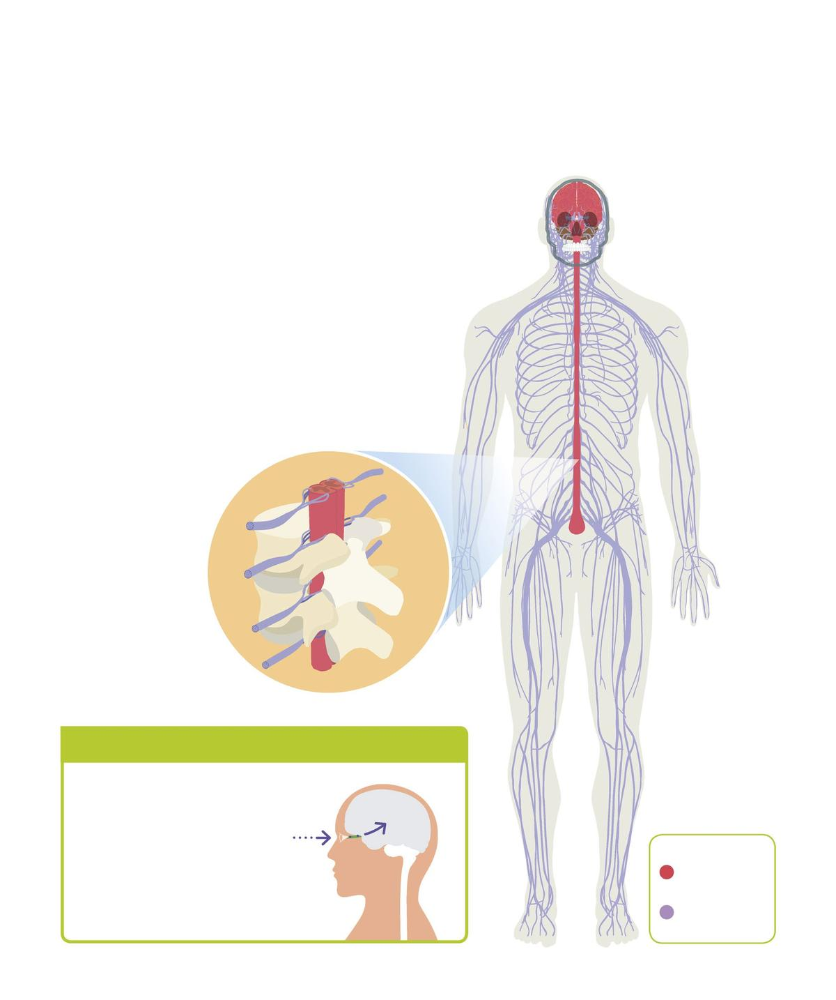
Não bộ trong cơ thể
Hộp sọ bảo vệ não.
Lan tỏa khắp cơ thể Hệ thần kinh (nervous system) kéo dài khắp toàn bộ cơ thể. Hệ này phức tạp đến mức nếu nối tất cả các dây thần kinh của cơ thể lại, đầu nối cuối, thì có thể quanh thế giới hai lần rưỡi.
Não là thành phần chính của hệ thần kinh người, vốn điều phối các hoạt động của cơ thể với thông tin cảm giác mà nó nhận được.
Não
Tủy sống
Các dây thần kinh tủy của hệ ngoại biên nối với tủy sống của hệ trung ương
Hệ thần kinh
Hai phần chính của hệ thần kinh là hệ thần kinh trung ương (central nervous system, CNS) và hệ thần kinh ngoại biên (peripheral nervous system). CNS gồm não và tủy sống, một bó dày các sợi thần kinh chạy từ não trong đầu xuống tận xương chậu. Phân nhánh ra từ đây là hệ ngoại biên, một mạng lưới dây thần kinh lan khắp phần còn lại của cơ thể. Hệ này được chia theo chức năng: hệ thần kinh cơ thể (somatic nervous system) lo các cử động tự ý của cơ thể, còn hệ thần kinh tự chủ (autonomic nervous system) (xem trang đối diện) lo các chức năng không tự ý.
Tủy sống chạy dọc phía sau, xuyên qua các đốt sống của cột sống
Các dây thần kinh ngoại biên vươn qua thân và các chi tới tay và chân
TỦY SỐNG
Dây thần kinh vận động
Dây thần kinh cảm giác
ĐỐT SỐNG
DÂY THẦN KINH TỦY
Dây thần kinh tủy Hầu hết các dây thần kinh ngoại biên nối với CNS tại tủy sống và tách ra khi chúng kết nối. Nhánh phía sau mang dữ liệu cảm giác lên não; nhánh phía trước mang tín hiệu vận động trở lại cơ thể.
Đốt sống xương bảo vệ tủy sống
Dây thần kinh tọa là dây thần kinh lớn nhất và dài nhất trong cơ thể
CỘT SỐNG (NHÌN TỪ PHÍA SAU)
Các dây thần kinh cảm giác và vận động thường được bó chung với nhau, tách ra ở các đầu mút
DÂY THẦN KINH SỌ
Trong hệ ngoại biên, 12 dây thần kinh sọ (cranial nerves) nối trực tiếp với não thay vì với tủy sống. Hầu hết nối vào mắt, tai, mũi và lưỡi, đồng thời tham gia vào các cử động của mặt, nhai và nuốt, nhưng dây thần kinh phế vị thì nối trực tiếp với tim, phổi và các cơ quan tiêu hóa.
Tín hiệu dọc theo dây thần kinh thị giác đi thẳng vào não
CHÚ GIẢI
Hệ thần kinh trung ương (CNS)
Hệ thần kinh ngoại biên
Tủy sống

MẮT
MẮT
Hệ thần kinh tự chủ
Hệ không tự ý, hay tự chủ, duy trì các điều kiện bên trong của cơ thể bằng cách kiểm soát các cơ không tự ý trong hệ tiêu hóa và nơi khác, cũng như nhịp tim, nhịp thở, nhiệt độ cơ thể và các quá trình trao đổi chất. Hệ tự chủ được chia thành hai phần. Hệ giao cảm (sympathetic) nhìn chung có tác dụng nâng cao mức hoạt động của cơ thể và tham gia vào cái gọi là phản ứng “chiến đấu hay bỏ chạy” (fight-or-flight). Hệ phó giao cảm (parasympathetic) hoạt động ngược lại, giảm hoạt động để đưa cơ thể về trạng thái “nghỉ ngơi và tiêu hóa” (rest-and-digest).
PHỔI
PHỔI
ĐỘNG MẠCH
ĐỘNG MẠCH
TIM
TIM
GAN
GAN
DẠ DÀY
DẠ DÀY
RUỘT
BÀNG QUANG
TỔNG CHIỀU DÀI CỦA HỆ THẦN KINH CƠ THỂ VÀO KHOẢNG 45 DẶM (72 KM)
BÀNG QUANG
RUỘT
Giao cảm Những dây thần kinh này thoát ra từ tủy sống ở vùng ngực và bụng, rồi nối vào một chuỗi các hạch thần kinh (bó dây thần kinh) chạy dọc hai bên cột sống. Từ đó, các dây thần kinh lại vươn ra khắp cơ thể.
Phó giao cảm Chủ yếu liên quan đến các dây thần kinh sọ (xem ở đầu trang bên trái), phần này của hệ tự chủ có tác dụng giảm tiêu hao năng lượng khi cơ thể nghỉ ngơi. Nó cũng tham gia vào sự hưng phấn tình dục, tiếng khóc và việc đại tiện.

Não bộ của động vật
CHÚ GIẢI
Tiểu não
Tuyến yên
Thùy thị giác
Hành não
Não người là một trong những đặc điểm định hình nên loài chúng ta. So sánh não người với não của các động vật khác cho thấy mối liên hệ giữa kích thước não và trí thông minh, cũng như giữa giải phẫu não của một con vật và cách nó sinh sống.
Đại não
Củng khứu giác
Khối lượng não
Khối lượng não tính theo phần trăm khối lượng cơ thể
Kích thước não
Kích thước của não cho thấy tổng sức mạnh xử lý của nó. Chẳng hạn, bộ não bé xíu của một con ong mật chứa 1 triệu nơ-ron, của cá sấu sông Nile có 80 triệu, trong khi não người có khoảng 80–90 tỷ nơ-ron. Mối liên hệ với trí thông minh là rõ ràng. Tuy nhiên, với những động vật lớn hơn, điều quan trọng là phải so sánh kích thước não và cơ thể để có một chỉ báo tinh tế hơn về năng lực nhận thức.
CÁ VÀNG
ẾCH BÒ
So đo kích thước Có hai cách so sánh kích thước não: theo trọng lượng tổng và theo phần trăm trọng lượng cơ thể. Bộ não lớn nhất, nặng 17 lb (7,8 kg), thuộc về cá voi đầu bò, nhưng đó chỉ là một phần cực nhỏ trong cơ thể nặng 44 tấn (45 tấn mét) của nó.
- 0,04 oz
- 0,04 oz
- 0 0,004 oz (0,1 g)
- 1 g
- 0
- 0,04 oz (0,2 g)
- 1 g
- 0 0,16%
- 2
- 0 0,04%
- 2
Thực quản chạy xuyên qua giữa não
Các dây thần kinh phân nhánh ra đầu và cơ thể từ mỗi hạch thần kinh
HÌNH DÁNG NÃO
Mọi bộ não đều nằm trong đầu, gần các cơ quan cảm giác chính. Tuy nhiên, sẽ là sai lầm nếu hình dung não động vật chỉ là những biến thể sơ khai về kích thước và cấu trúc của não người. Não của mọi động vật có xương sống (vertebrates) đều đi theo một kế hoạch phát triển chung, nhưng giải phẫu lại khác nhau rất nhiều để đáp ứng các nhu cầu cảm giác và hành vi khác nhau. Sự đa dạng lớn hơn thấy rõ ở não của động vật không xương sống (invertebrates), chiếm 95 phần trăm tổng số loài động vật.
Não hình bánh vòng
Đỉa Các tế bào 10.000 trong hệ thần kinh của một con đỉa được sắp xếp thành chuỗi các cụm tế bào gọi là hạch thần kinh (ganglia). Não là một hạch lớn, gồm 350 nơ-ron, nằm ở phía trước cơ thể.
Bạch tuộc Não của một con bạch tuộc chứa 500 triệu nơ-ron. Chỉ một phần ba nằm trong đầu; phần còn lại nằm ở các xúc tu và da, nơi chúng đảm nhiệm việc kiểm soát cảm giác và vận động.
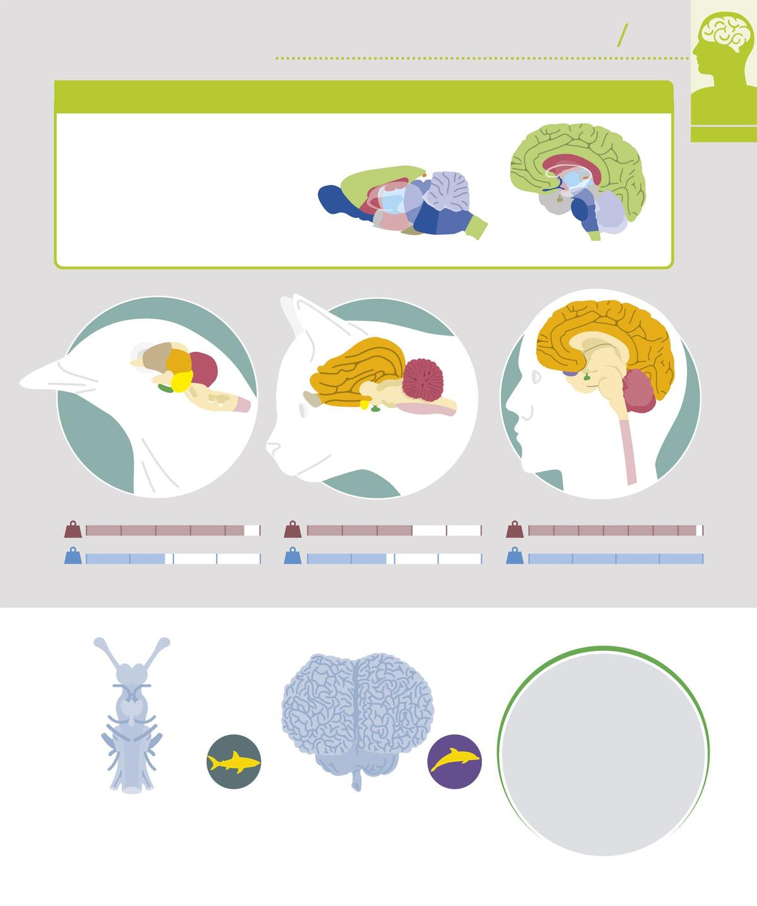
TỶ LỆ KHÁC NHAU
Não của mọi động vật có vú đều chứa các thành phần giống nhau, nhưng chúng phát triển với tỷ lệ khác nhau. Một phần ba thể tích hệ thần kinh trung ương (CNS) của chuột là tủy sống, cho thấy sự phụ thuộc vào các cử động phản xạ. Ngược lại, tủy sống chỉ chiếm một phần mười CNS của con người. Thay vào đó, ba phần tư được chiếm bởi đại não, vốn dùng cho tri giác (perception) và nhận thức.
Đại não
Đại não
NÃO CHUỘT
NÃO NGƯỜI
Cút châu Âu
MÈO NHÀ
CON NGƯỜI
- 0,04 oz
- 1,76 oz
- 49,4 oz
- 0
- 0,03 oz (0,9 g) 1 g
- 0
- 1,05 oz (30 g)
- 50 g
- 0
- 47,6 oz (1.350 g) 1.400 g
- 0
- 0,9%
- 2
- 0
- 0,9%
- 2
- 0
- 2% 2
Các củng khứu giác nằm sau các lỗ mũi (nares), những khe giống lỗ mũi dùng để đánh hơi trong nước
Vỏ não được gấp nếp nhiều hơn ở người
MỌI ĐỘNG VẬT ĐỀU CÓ NÃO KHÔNG?
Bọt biển hoàn toàn không có tế bào thần kinh, trong khi sứa và san hô có hệ thần kinh dạng lưới nhưng không có điểm điều khiển trung ương.
Cá mập Não của cá mập có hình chữ Y nhờ các củng khứu giác lớn nhô ra ở hai bên. Khứu giác là cách chính để cá mập lần theo con mồi.
Cá heo Các trung tâm thính giác và thị giác trong não cá heo lớn hơn và nằm gần nhau hơn so với não người. Người ta cho rằng điều này giúp cá heo tạo ra một hình ảnh trong đầu bằng sóng siêu âm của nó.
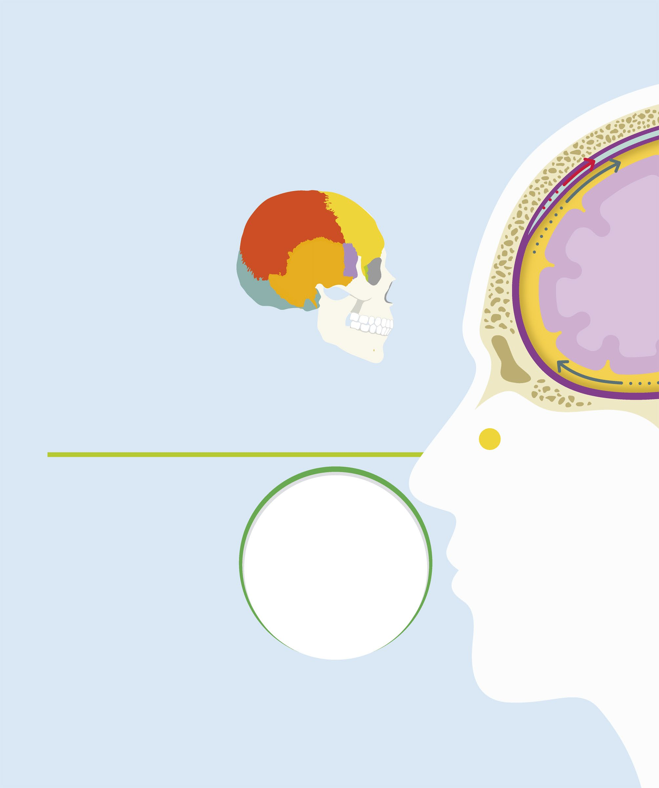
Các cơ quan thiết yếu được cố định an toàn trong lõi cơ thể, nhưng vì não nằm ở đầu, trên đỉnh cơ thể, nên nó cần một hệ thống bảo vệ riêng.
Các xoang màng cứng thu máu đã cạn oxy
Sọ não
Các xương của đầu được gọi chung là hộp sọ, nhưng chính xác hơn thì được chia thành sọ não (cranium) và hàm dưới, hay xương hàm. Sọ não được nâng đỡ bởi đốt sống cổ cao nhất và hệ cơ của cổ. Sọ não tạo thành một hộp xương bao quanh hoàn toàn bộ não. Nó gồm 22 xương dần dần dính lại với nhau trong những năm đầu đời để tạo thành một cấu trúc đơn nhất, cứng chắc. Tuy nhiên, sọ não có khoảng 64 lỗ, gọi là lỗ xương (foramina), để các dây thần kinh và mạch máu đi qua, cùng tám khoảng rỗng chứa khí, hay xoang, giúp giảm trọng lượng của hộp sọ.
THÙY ĐỈNH (2)
THÙY TRÁN (1)
XƯƠNG BƯỚM (1)
XƯƠNG SÀNG (1)
Khoảng dưới nhện
THÙY THÁI DƯƠNG (2)
THÙY CHẨM (1)
Xương đôi Não được bao bọc bởi tám xương lớn, với một đôi xương đỉnh và xương thái dương tạo thành mỗi bên của sọ não. 14 xương sọ còn lại tạo nên bộ xương mặt.
Hướng dòng chảy Dịch não tủy chảy từ
2
các não thất vào khoảng dưới nhện, rồi từ đó đi lên và qua phía trước của não.
Dịch não tủy
Não không tiếp xúc trực tiếp với sọ não. Thay vào đó, nó được treo lơ lửng trong dịch não tủy (cerebrospinal fluid, CSF). Chất lỏng trong suốt này lưu thông bên trong sọ não, tạo ra một lớp đệm quanh não để bảo vệ nó khi đầu bị va chạm. Thêm vào đó, não nổi không bị biến dạng dưới trọng lượng của chính nó — điều mà nếu không sẽ hạn chế dòng máu đến các vùng bên trong thấp hơn. Lượng CSF chính xác cũng thay đổi để duy trì áp lực tối ưu bên trong sọ não. Giảm thể tích CSF sẽ hạ áp lực, lần lượt giúp máu lưu thông dễ dàng hơn qua não.
NƯỚC TRÊN NÃO LÀ GÌ?
CSF ĐƯỢC SẢN XUẤT LIÊN TỤC, VÀ TOÀN BỘ ĐƯỢC THAY THẾ SAU MỖI 6–8 GIỜ
Còn gọi là não úng thủy, tình trạng này phát sinh khi có quá nhiều CSF trong sọ não. Nó gây áp lực lên não và ảnh hưởng đến chức năng của não.
Màng não và não thất Não được bao quanh bởi ba màng, gọi là màng não (meninges): màng mềm (pia mater), màng nhện (arachnoid mater) và màng cứng (dura mater). CSF lấp đầy các hốc gọi là não thất và lưu thông quanh bên ngoài não trong khoảng dưới nhện, nằm giữa màng mềm và màng nhện.
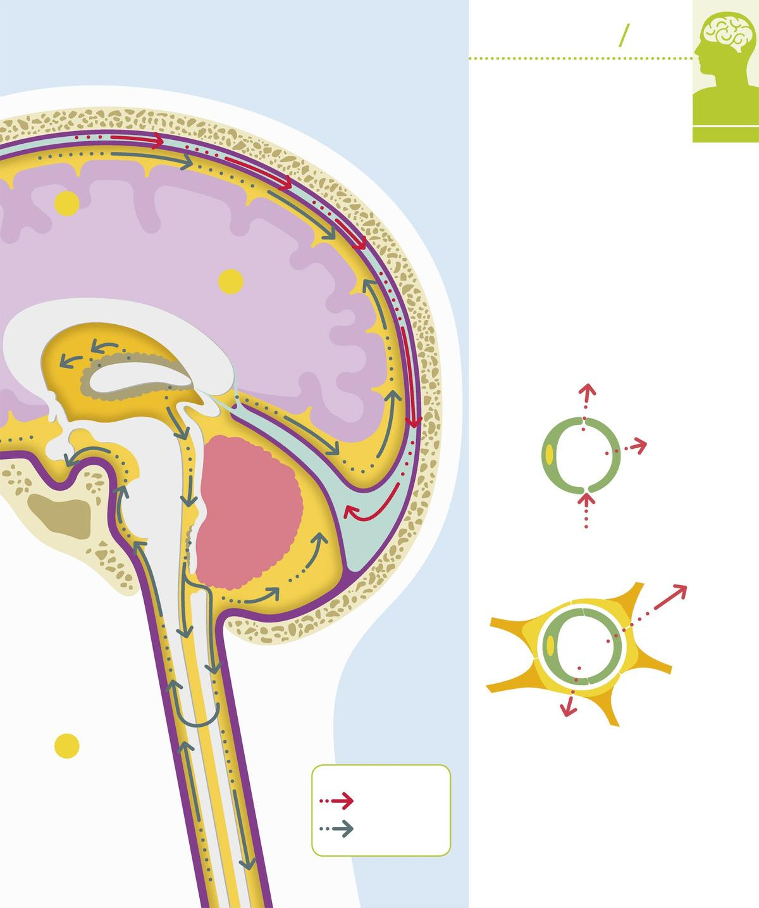
Màng cứng
Hàng rào máu não
Màng nhện
Các nhiễm trùng từ phần còn lại của cơ thể thường không thể đến não nhờ một hệ thống gọi là hàng rào máu não (blood-brain barrier). Nhìn chung, các mao mạch máu ở phần còn lại của cơ thể dễ dàng rò rỉ chất lỏng (cùng với bất kỳ vi rút và vi khuẩn nào chứa trong đó) vào các mô xung quanh qua các khe hở giữa các tế bào tạo thành thành mạch. Ở não, chính những tế bào đó khít chặt hơn nhiều, và dòng vật chất giữa máu và não được kiểm soát bởi các tế bào sao (astrocytes) bao quanh mạch máu.
Màng mềm
Vị trí sản xuất dịch CSF được làm từ huyết tương, phần
1
lỏng của máu. Phần lớn dịch được tạo bởi đám rối màng mạch (choroid plexus), một mạng lưới mạch máu chạy khắp hệ thống não thất.
Tái hấp thụ CSF được tái hấp thụ
CSF chảy vào các não thất
4
vào hệ tuần hoàn, nơi nó hòa trộn lại với máu. CSF được đổi mới với tốc độ ba đến bốn lần mỗi ngày.
Não thất bên — đám rối màng mạch
Các chất đi ra khỏi mạch qua lỗ chân lông
Các chất tan trong chất béo đi xuyên qua màng tế bào
NÃO THẤT THỨ BA
Các chất tan trong nước đi vào qua khe giữa các tế bào
NÃO THẤT THỨ TƯ
MẠCH MÁU BÌNH THƯỜNG
TIỂU NÃO
Một số chất tan trong nước đi vào não
Kết nối chặt giữa các tế bào
HỘP SỌ
CSF chảy xuống phía sau tủy sống
Tế bào sao bao quanh mạch máu
Các chất tan trong chất béo di chuyển tự do
MẠCH MÁU NON
Lưu thông quanh
3
tủy sống Ngoài não, CSF còn bao quanh tủy sống, chảy xuống dọc phía sau tủy sống, vào ống trung tâm, rồi đi lên dọc phía trước.
ỐNG TRUNG TÂM CỦA TỦY SỐNG
CHÚ GIẢI
Thấm chọn lọc Các mạch máu bình thường cho chất lỏng đi qua dễ dàng. Tuy nhiên, trong khi oxy, hormone gốc chất béo và vật chất không tan trong nước đi qua hàng rào máu não không bị cản trở, thì các chất tan trong nước bị chặn lại nên không đến được CSF.
Dòng máu
Dòng dịch não tủy

CÓ PHẢI SỰ TẬP TRUNG CAO ĐỘ TIÊU HAO NHIỀU NĂNG LƯỢNG HƠN KHÔNG?
Não bộ
Não không bao giờ ngừng hoạt động, và mức tiêu thụ năng lượng tổng thể giữ gần như không đổi trong 24 giờ mỗi ngày.
Não là một cơ quan “khát” năng lượng. Khác với các cơ quan khác trong cơ thể, nó chỉ được tiếp nhiên liệu bằng glucose, một loại đường đơn giản, dễ và nhanh chuyển hóa.
Cung cấp máu
Tim bơm máu đi khắp cơ thể, nhưng khoảng một phần sáu tổng công sức của nó được dành để đẩy máu lên não. Máu đến não qua hai đường động mạch chính. Hai động mạch cảnh (carotid arteries), một chạy lên mỗi bên cổ, đưa máu đến phía trước não (cùng với mắt, mặt và da đầu). Phía sau não được cung cấp bởi các động mạch đốt sống (vertebral arteries), vươn lên xoắn qua cột sống. Sau đó, máu đã mất oxy tích tụ trong các xoang não, những khoảng được tạo bởi các tĩnh mạch phình to chạy qua não. Máu ở đó thoát ra khỏi não và đi xuống qua cổ qua các tĩnh mạch cảnh trong. Hệ mạch máu đưa 26 fl oz (750 ml) máu đến não mỗi phút, tương đương 1,7 fl oz (50 ml) cho mỗi 3,5 oz (100 g) mô não. Nếu thể tích đó giảm xuống dưới khoảng 0,7 fl oz (20 ml), mô não sẽ ngừng hoạt động.
Động mạch cảnh
Động mạch đốt sống
TỪ TIM ĐẾN
Đi qua hàng rào máu não
Khuếch tán Các tế bào được bao bọc
Vận chuyển qua khe Các chất tan trong nước và
Hàng rào máu não là một rào cản vật lý và trao đổi chất giữa não và nguồn cung máu của nó. Hàng rào này bảo vệ thêm chống lại nhiễm trùng, vốn rất khó đối phó trong não bằng hệ miễn dịch thông thường, và có thể khiến não rối loạn chức năng theo những cách nguy hiểm. Có sáu cách để vật chất đi qua hàng rào. Ngoài ra, không thứ gì ra vào được.
bởi một màng mỡ, nên các chất tan trong chất béo, gồm oxy và rượu, khuếch tán qua tế bào.
chất điện giải, chẳng hạn như muối và ion
MẠCH MÁU (nguyên tử hoặc phân tử mang điện), có thể đi qua các khe nhỏ giữa các tế bào thành mao mạch.
Chất tan trong nước
Chất tan trong chất béo
HÀNG RÀO MÁU NON
Thành tế bào Rào cản vật lý của hàng rào máu não được tạo bởi các tế bào cấu thành thành mao mạch trong não. Ở những nơi khác của cơ thể, các tế bào này nối lỏng, để lại các khe hở, hay mối nối lỏng. Ở não, các tế bào nối với nhau bằng mối nối chặt (tight junction).
Mối nối chặt
Phân tử đi xuyên qua tế bào
NÃO
Tế bào sao thu vật chất từ máu và chuyển cho nơ-ron
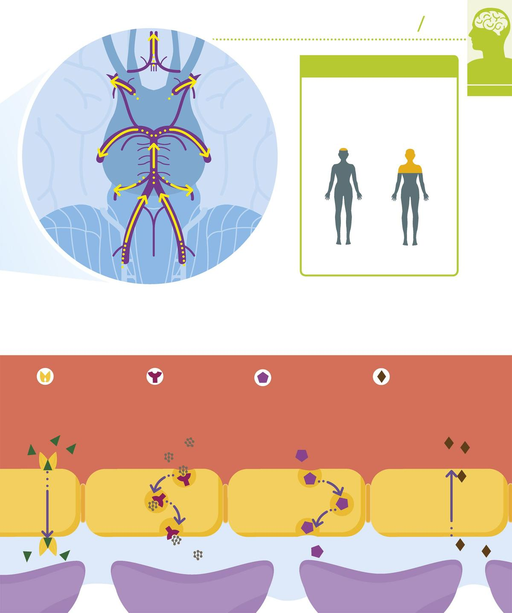
VÒNG WILLIS
Động mạch não trước cung cấp máu cho phía trước não
NHIÊN LIỆU GLUCOSE
Não người chỉ chiếm 2 phần trăm tổng trọng lượng cơ thể, nhưng tiêu thụ 20 phần trăm năng lượng của cơ thể. Bộ não lớn của con người là một cơ quan đắt đỏ để vận hành, nhưng lợi ích của một bộ não lớn và thông minh khiến nó trở thành một khoản đầu tư xứng đáng.
Đường giữa
Động mạch cảnh trong động mạch não cung cấp máu cho hai bên não
Động mạch não sau cung cấp máu cho phía sau não
Hướng dòng chảy của máu
Các động mạch vây quanh cuống tuyến yên, các bó thị giác và vùng dưới đồi đáy
Động mạch nền Động mạch tiểu não cung cấp máu cho tiểu não
Động mạch đốt sống
KÍCH THƯỚC NÃO: 2%
NHU CẦU NĂNG LƯỢNG CỦA NÃO: 20%
MẶT DƯỚI CỦA NÃO
TOÀN BỘ LƯỢNG MÁU CỦA CƠ THỂ ĐƯỢC BƠM QUA NÃO SAU MỖI 7 PHÚT
Vòng Willis Các nguồn cung từ động mạch cảnh và động mạch đốt sống nối với nhau ở đáy não qua các động mạch thông nối, tạo thành một vòng mạch gọi là Vòng Willis. Đặc điểm này đảm bảo dòng máu não được duy trì, ngay cả khi một trong các động mạch bị tắc.
Vận chuyển protein Glucose và các
Thụ thể Các hormone và các chất
Vận chuyển qua bóng Các protein lớn, vốn
Thải ra tích cực Khi các chất không mong muốn
phân tử thiết yếu, được di chuyển tích cực qua hàng rào thông qua các kênh và cổng trong màng.
tương tự được các thụ thể thu lấy. Chúng được bao trong một bóng nhỏ (túi) làm bằng màng để đi xuyên qua tế bào.
quá lớn để đi qua kênh, được màng hấp thụ và bao trong một bóng nhỏ cho hành trình xuyên qua tế bào.
khuếch tán qua hàng rào máu não, chúng được loại bỏ bằng một hệ thống bơm sinh hóa gọi là chất vận chuyển thải ra (efflux transporters).
Phân tử protein được bao trong bóng nhỏ
Glu-cô
Hormone đến thụ thể và đi vào bóng nhỏ
Chất thải được bơm vào mạch máu
Cổng được làm từ protein
Bóng nhỏ hợp với màng để giải phóng nội dung
Các sản phẩm thải không mong muốn
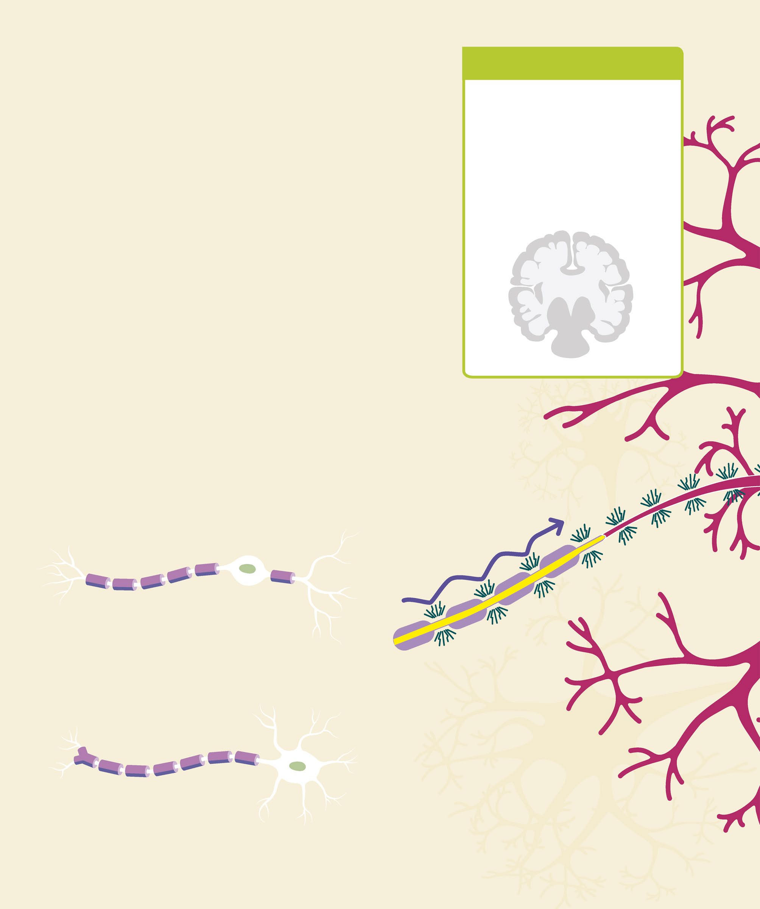
CHẤT XÁM
Não được chia thành chất xám và chất trắng. Chất xám gồm các thân tế bào thần kinh, thường thấy ở bề mặt não. Chất trắng gồm các sợi trục (axon) có bao myelin của chính những tế bào thần kinh đó, bó thành từng chùm. Chúng chạy xuyên qua giữa não và đi xuống tủy sống.
Não và phần còn lại của hệ thần kinh chứa một mạng lưới tế bào gọi là nơ-ron. Vai trò của nơ-ron là mang tín hiệu thần kinh qua não và cơ thể dưới dạng các xung điện.
Nơ-ron
Hầu hết các nơ-ron có hình dạng phân nhánh đặc trưng, với hàng chục sợi mảnh, chỉ dày vài phần trăm nghìn của một foot, nhô ra từ thân tế bào về phía các tế bào lân cận. Các nhánh gọi là sợi nhánh (dendrites) đưa tín hiệu vào tế bào, trong khi một nhánh duy nhất gọi là sợi trục (axon) truyền tín hiệu sang nơ-ron tiếp theo. Trong hầu hết trường hợp, không có kết nối vật lý giữa các nơ-ron. Thay vào đó, có một khe hở nhỏ gọi là khớp thần kinh (synapse), nơi các tín hiệu điện dừng lại. Sự trao đổi thông tin giữa các tế bào được thực hiện thông qua việc trao đổi các hóa chất gọi là chất dẫn truyền thần kinh (neurotransmitters) (xem tr.22–23). Tuy nhiên, một số nơ-ron thực chất được nối vật lý với nhau và không cần chất dẫn truyền thần kinh để trao đổi tín hiệu.
CHẤT XÁM
CHẤT TRẮNG
Các loại nơ-ron Có một vài loại nơ-ron, với những tổ hợp khác nhau giữa sợi trục và sợi nhánh. Hai loại thường gặp, nơ-ron lưỡng cực và nơ-ron đa cực, mỗi loại phù hợp với một nhiệm vụ riêng. Một loại khác, nơ-ron đơn cực, chỉ xuất hiện ở phôi thai.
Sợi nhánh hoạt động như những ăng-ten để thu tín hiệu từ các tế bào thần kinh lân cận
Sợi trục có thể dài đến vài centimet
Xung điện nhảy từ đoạn bao myelin này sang đoạn khác, làm tăng tốc tín hiệu thần kinh
Kết nối với các tế bào não Sợi trục
Sợi nhánh nhận tín hiệu từ cơ quan cảm giác
Sợi nhánh ngắn hơn sợi trục, thường chỉ dài tới 16 phần trăm nghìn của một foot
Thân tế bào
SỢI TRỤC
Nơ-ron lưỡng cực Loại nơ-ron này có một sợi nhánh và một sợi trục. Nó truyền thông tin chuyên biệt từ các cơ quan cảm giác chính của cơ thể.
Sợi trục mang tín hiệu từ tế bào lân cận
Thân tế bào
Khớp thần kinh với tế bào khác
Sợi trục
Sợi nhánh
NÃO NGƯỜI CHỨA KHOẢNG 86 TỶ NƠ-RON
Nơ-ron đa cực Hầu hết tế bào não là nơ-ron đa cực. Chúng có nhiều sợi nhánh nối với hàng trăm, thậm chí hàng nghìn tế bào khác.

Các hóa chất đi qua từ tế bào lân cận tạo ra một xung điện trong sợi nhánh
BAO MYELIN
Một số nơ-ron trong hệ thần kinh ngoại biên có tế bào Schwann tạo myelin
Các sợi thần kinh (neurofibrils)
MÀNG SỢI TRỤC
VỎ BAO MYELIN
Vỏ bao myelin quấn quanh sợi trục
Màng tế bào dẫn truyền các xung thần kinh
Một tín hiệu điện tổng hợp duy nhất được gửi sang tế bào tiếp theo
Thân tế bào thần kinh
Cách ly Một sợi trục có thể được bọc trong một lớp vỏ chất béo gọi là bao myelin (myelin). Lớp này hoạt động như vật liệu cách ly, ngăn các điện tích rò rỉ ra ngoài, từ đó làm tăng tốc độ tín hiệu.
DNA
NHÂN TẾ BÀO
SỢI TRỤC
Tế bào đệm
Hệ thần kinh dựa vào một đội ngũ tế bào phụ trợ gọi là tế bào đệm (glia). Các tế bào sao (astrocytes) kiểm soát hóa chất nào đi vào não từ máu. Các tế bào oligodendrocyte tạo myelin cho các tế bào não, tạo nên chất trắng. Các tế bào ependymal tiết dịch não tủy, trong khi các tế bào đệm vi mô (microglia) hoạt động như tế bào miễn dịch, dọn dẹp các tế bào chết. Các tế bào đệm hướng tâm (radial glia) là tiền chất của nơ-ron.
Bộ máy Golgi đóng gói hóa chất
Tế bào phụ trợ Có tám loại tế bào đệm chính, nhưng chỉ năm loại thường gặp trong não. Chúng bảo vệ sức khỏe tổng thể của hệ thần kinh.
Lysosome phá hủy hóa chất thải
Ty thể xử lý glucose
Mạch máu được nâng đỡ
Vỏ myelin được tạo ở đây
Nơ-ron đang phát triển
TẾ BÀO SAO
TẾ BÀO OLIGODENDROCYTE
Lông mao giúp di chuyển chất dẫn truyền thần kinh
Bên trong một nơ-ron Một nơ-ron chứa về cơ bản cùng một bộ bào quan, hay cấu trúc bên trong, như bất kỳ tế bào nào khác, để giải phóng năng lượng, chế tạo protein và quản lý vật chất di truyền.
Tế bào dài, thẳng cung cấp sự nâng đỡ
Tế bào bị tổn thương được phát hiện ở đây
TẾ BÀO EPENDYMAL
TẾ BÀO ĐỆM VI MÔ
TẾ BÀO ĐỆM HƯỚNG TÂM

Tín hiệu thần kinh
LÀM THẾ NÀO ĐỂ MỘT
DÂY THẦN KINH TRUYỀN CÁC THÔNG TIN KHÁC NHAU?
Bộ não và hệ thần kinh hoạt động bằng cách truyền tín hiệu qua bên trong các tế bào dưới dạng các xung điện tích, và giữa các tế bào thì hoặc là dùng các chất dẫn truyền hóa học gọi là neurotransmitters (chất dẫn truyền thần kinh), hoặc là dùng điện tích.
Các tế bào nhận có các loại thụ thể khác nhau, đáp ứng với các chất dẫn truyền thần kinh khác nhau. “Thông điệp” khác nhau tùy theo chất dẫn truyền thần kinh nào được gửi và nhận, cũng như số lượng của chúng.
Điện thế hoạt động (action potential)
Các nơ-ron truyền tín hiệu bằng cách tạo ra điện thế hoạt động—một dòng điện bùng lên do các ion natri và kali đi qua màng tế bào. Tín hiệu này di chuyển dọc theo sợi trục (axon) và kích thích các thụ thể trên sợi nhánh (dendrite) của các tế bào lân cận. Điểm nối giữa các tế bào được gọi là khớp thần kinh (synapse). Ở nhiều nơ-ron, điện tích được truyền qua một khe hở rất nhỏ giữa sợi trục và sợi nhánh nhờ các hóa chất, gọi là chất dẫn truyền thần kinh, được giải phóng từ đầu sợi trục. Những điểm nối này được gọi là khớp thần kinh hóa học. Tín hiệu có thể khiến nơ-ron lân cận phát xung, hoặc có thể ngăn nó phát xung.
MỘT SỐ XUNG THẦN KINH DI CHUYỂN NHANH HƠN 330 FT (100 M) MỖI GIÂY
Lượng ion dương dư thừa ở bên ngoài màng tế bào.
Các kênh màng mở ra để ion đi vào.
Lượng ion dư thừa bên trong tạo ra điện tích dương.
MÀNG SỢI TRỤC CỦA TẾ BÀO
CHẤT LỎNG BÊN TRONG SỢI TRỤC
CHÚ THÍCH
Các ion dương ồ ạt tràn vào.
Hướng của xung thần kinh.
Dòng chảy của các ion.
Hướng của xung thần kinh.
Quá trình khử cực (depolarization): Những thay đổi hóa học từ thân tế bào
Điện thế nghỉ (resting potential): Khi nơ-ron ở trạng thái nghỉ, có nhiều ion dương
1
2
cho phép các ion dương tràn vào tế bào qua màng. Điều này đảo ngược sự phân cực của sợi trục, khiến hiệu điện thế trở thành +30 milivôn.
ở bên ngoài màng hơn là bên trong. Điều này tạo ra sự khác biệt về phân cực, hay điện thế, qua màng được gọi là điện thế nghỉ. Hiệu số này vào khoảng –70 milivôn, nghĩa là bên ngoài mang điện dương.
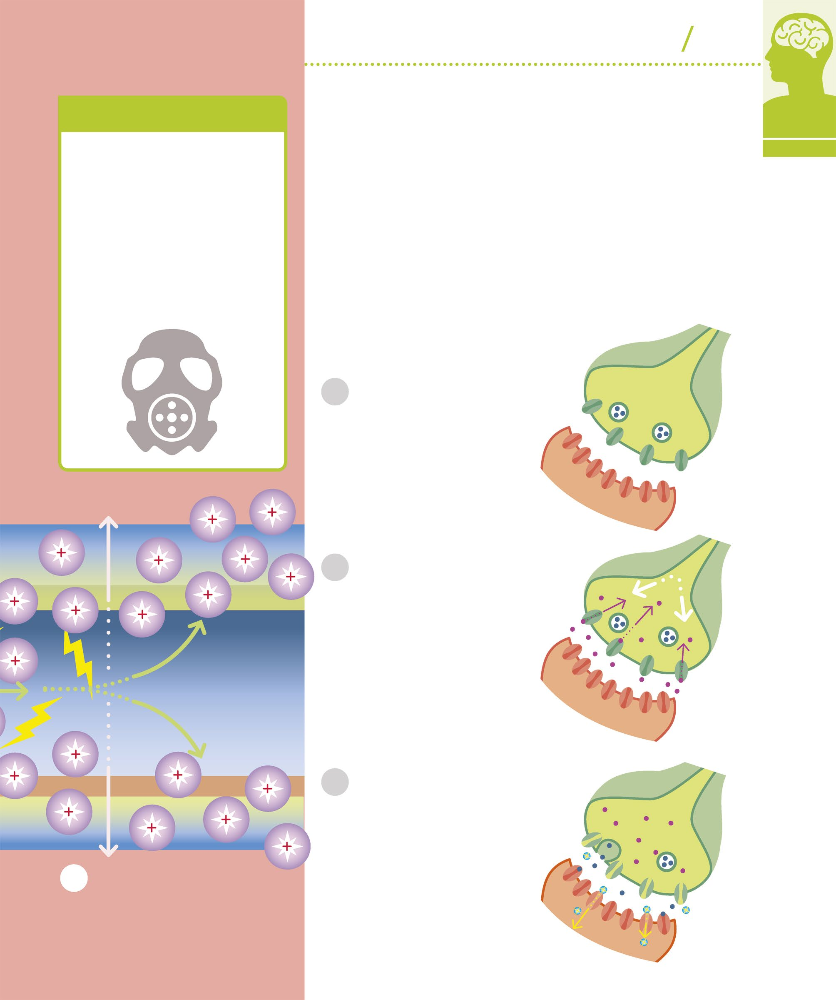
Khớp thần kinh
CHẤT ĐỘC THẦN KINH
Một số nơ-ron không chia sẻ một kết nối vật lý. Thay vào đó, chúng gặp nhau tại một cấu trúc tế bào gọi là khớp thần kinh, nơi có một khe hở rộng 40 phần tỷ của mét, được gọi là khe synap (synaptic cleft), giữa sợi trục của một nơ-ron (tế bào trước synap) và sợi nhánh của nơ-ron kia (tế bào sau synap). Bất kỳ tín hiệu mã hóa nào được mang bởi các xung điện sẽ được chuyển thành thông điệp hóa học ở đầu, hay đầu tận cùng, của sợi trục. Các thông điệp này có dạng của một trong một số phân tử gọi là chất dẫn truyền thần kinh (xem tr.24), đi qua khe synap để được sợi nhánh tiếp nhận. Các nơ-ron khác có khớp thần kinh điện thay vì khớp thần kinh hóa học. Những khớp này thực chất được nối vật lý với nhau và không cần chất dẫn truyền thần kinh để mang điện tích giữa chúng.
Các vũ khí hóa học, như novichok và sarin, hoạt động bằng cách can thiệp vào cách các chất dẫn truyền thần kinh hoạt động tại khớp thần kinh. Các chất độc thần kinh có thể được hít vào hoặc tác động khi tiếp xúc với da. Chúng ngăn khớp thần kinh dọn dẹp acetylcholine đã sử dụng, chất có liên quan đến việc kiểm soát cơ bắp. Kết quả là các cơ, kể cả cơ dùng cho tim và phổi, bị tê liệt.
Bóng synap (synaptic vesicle).
Đầu tận cùng sợi trục — khe synap — tế bào sau synap.
Kho hóa chất: Các chất dẫn truyền thần kinh được
1
được sản xuất trong thân tế bào của nơ-ron. Chúng di chuyển dọc sợi trục đến đầu tận cùng, nơi chúng được đóng gói thành các túi màng, hay bóng. Ở giai đoạn này, màng của đầu tận cùng mang cùng điện thế như phần còn lại của sợi trục.
Chất dẫn truyền thần kinh.
Thụ thể cho chất dẫn truyền thần kinh.
Điện thế hoạt động đến và khử cực màng.
Tín hiệu được nhận: Khi một điện thế hoạt động
2
ồ ạt đi xuống sợi trục, điểm đến cuối cùng của nó là đầu tận cùng, nơi nó tạm thời khử cực màng. Sự thay đổi điện này có tác dụng mở các kênh protein trong màng, cho phép các ion calci mang điện dương tràn vào tế bào.
Các ion calci chảy vào.
Các ion dương bị bơm ra ngoài.
Sự khử cực khiến các kênh điều khiển bằng điện thế mở ra.
Dòng calci tràn vào khiến các bóng synap giải phóng chất dẫn truyền thần kinh.
Giải phóng thông điệp: Sự hiện diện của calci
3
bên trong tế bào khởi phát một quá trình phức tạp di chuyển các bóng đến màng tế bào. Khi đến nơi, các bóng giải phóng chất dẫn truyền thần kinh vào khe hở. Một số khuếch tán qua khe để được các thụ thể trên sợi nhánh bắt lấy. Các chất dẫn truyền thần kinh có thể kích thích một điện thế hoạt động hình thành trong sợi nhánh đó, hoặc có thể ức chế không cho nó hình thành.
Các chất dẫn truyền thần kinh lắp vào các vị trí thụ thể.
Tái phân cực (repolarization): Sự khử cực của một đoạn
3
sợi trục khiến đoạn lân cận trải qua cùng một quá trình. Trong khi đó, tế bào bơm các ion dương ra ngoài để tái phân cực màng trở lại điện thế nghỉ.
Các kênh mở ra và khiến các ion dương chảy vào, phân cực tế bào.

NGHIỆN CÔNG NGHỆ CÓ GIỐNG NHƯ NGHIỆN MA TÚY KHÔNG?
Hóa chất
Không, nghiện công nghệ giống với ăn quá mức hơn. Việc giải phóng dopamine có thể tăng thêm 75 phần trăm khi chơi trò chơi điện tử và 350 phần trăm khi dùng cocaine.
Trong khi sự liên lạc trong bộ não dựa vào các xung điện chạy dọc các tế bào thần kinh giống như dây dẫn, thì hoạt động của các tế bào này—và các trạng thái tinh thần lẫn thể chất mà chúng gây ra—chịu ảnh hưởng lớn từ các hóa chất gọi là chất dẫn truyền thần kinh.
Chất dẫn truyền thần kinh
Thuốc
Các chất dẫn truyền thần kinh hoạt động tại khớp thần kinh, khe hở nhỏ giữa sợi trục của một tế bào và sợi nhánh của tế bào kia (xem tr.23). Một số chất dẫn truyền thần kinh có tác dụng kích thích, nghĩa là chúng giúp tiếp tục truyền xung thần kinh đến sợi nhánh nhận. Các chất dẫn truyền thần kinh ức chế có tác dụng ngược lại. Chúng tạo ra điện tích âm tăng cao, làm ngăn sự truyền của xung thần kinh bằng cách không cho quá trình khử cực xảy ra. Những chất dẫn truyền thần kinh khác, gọi là chất điều hòa thần kinh, điều hòa hoạt động của các nơ-ron khác trong não. Các chất điều hòa thần kinh ở lại lâu hơn tại khớp thần kinh, nên chúng có nhiều thời gian hơn để tác động lên các nơ-ron.
Các hóa chất làm thay đổi trạng thái tinh thần và thể chất, dù hợp pháp hay bất hợp pháp, nhìn chung hoạt động bằng cách tương tác với một chất dẫn truyền thần kinh. Ví dụ, caffeine chặn các thụ thể adenosine, có tác dụng tăng sự tỉnh táo. Alcohol kích thích các thụ thể GABA và ức chế glutamate, cả hai đều nhìn chung ức chế hoạt động thần kinh. Nicotine kích hoạt các thụ thể cho acetylcholine, có một số tác dụng, bao gồm tăng sự chú ý cũng như tăng nhịp tim và huyết áp. Cả alcohol và nicotine đều được liên hệ với mức dopamine tăng cao trong não, chính là điều dẫn đến đặc tính gây nghiện mạnh của chúng.
CÁC LOẠI CHẤT DẪN TRUYỀN THẦN KINH
LOẠI THUỐC
TÁC DỤNG
Một hóa chất trong não kích thích thụ thể liên quan đến một chất dẫn truyền thần kinh cụ thể, làm tăng tác dụng của chất đó.
Có ít nhất 100 chất dẫn truyền thần kinh, một số được liệt kê dưới đây. Việc một chất dẫn truyền thần kinh là kích thích hay ức chế được quyết định bởi nơ-ron trước synap đã giải phóng nó.
Chất đồng vận (Agonist)
Một phân tử làm ngược lại với chất đồng vận, bằng cách ức chế hoạt động của các thụ thể liên quan đến một chất dẫn truyền thần kinh.
TÊN HÓA HỌC CỦA CHẤT DẪN TRUYỀN THẦN KINH
TÁC DỤNG SAU SYNAP THƯỜNG GẶP
Chất đối vận (Antagonist)
Acetylcholine
Chủ yếu kích thích.
Một hóa chất ngăn chất dẫn truyền thần kinh được hấp thu lại bởi nơ-ron gửi, từ đó gây ra phản ứng đồng vận.
Chất ức chế tái hấp thu (reuptake inhibitor)
Axit gamma-aminobutyric (GABA)
Ức chế.
Glutamate
Kích thích.
NỘC NHỆN GÓA ĐEN LÀM TĂNG MỨC CHẤT DẪN TRUYỀN THẦN KINH ACETYLCHOLINE, GÂY CO GIẬT CƠ
Dopamine
Kích thích và ức chế.
Noradrenaline
Chủ yếu kích thích.
Serotonin
Ức chế.
Histamine
Kích thích.

ẢNH HƯỞNG DÀI HẠN CỦA ALCOHOL
CHÚ THÍCH
Dopamine — một chất dẫn truyền thần kinh.
Uống một lượng lớn alcohol trong thời gian dài làm thay đổi tâm trạng, mức độ hưng phấn, hành vi và chức năng tâm thần kinh. Tác dụng ức chế của alcohol vừa kích thích GABA vừa ức chế glutamate, làm giảm hoạt động của não. Nó cũng kích hoạt các trung tâm phần thưởng của não bằng cách giải phóng dopamine, trong một số trường hợp dẫn đến nghiện.
Chất cocaine.
Dopamine và cocaine: Tác dụng của cocaine là kết quả của việc nó tác động lên chất dẫn truyền thần kinh dopamine tại các khớp thần kinh trong não.
Dopamine được giữ trong các bóng bên trong nơ-ron gửi.
Dopamine được giải phóng.
BÓNG
BÓNG
NƠ-RON GỬI
NƠ-RON GỬI
KHỚP THẦN KINH
KHỚP THẦN KINH
THỤ THỂ
THỤ THỂ
Sau khi được giải phóng, một số dopamine liên kết với các thụ thể trên nơ-ron nhận.
Dopamine không dùng được hút ngược lại vào nơ-ron gửi.
Cocaine chặn đường quay trở lại của dopamine vào nơ-ron gửi.
Nồng độ dopamine trong khớp thần kinh tăng lên.
NƠ-RON NHẬN
NƠ-RON NHẬN
NƠ-RON NHẬN
NƠ-RON NHẬN
Mức dopamine bình thường: Dopamine là một chất dẫn truyền thần kinh liên quan đến cảm giác vui sướng. Nó tạo ra động lực lặp lại một số hành vi nhất định gây ra cảm giác phần thưởng, có thể dẫn đến nghiện. Trong khi một số phân tử dopamine liên kết với các thụ thể trên nơ-ron nhận, thì dopamine không dùng được được tái chế bằng cách bơm ngược vào nơ-ron gửi và được đóng gói lại.
Khi sử dụng cocaine: Các phân tử cocaine là chất ức chế tái hấp thu dopamine. Khi dopamine được giải phóng, nó đi vào khớp thần kinh và liên kết với các thụ thể trên nơ-ron nhận như bình thường. Tuy nhiên, cocaine đã chặn các bơm tái hấp thu vốn tái chế dopamine, nên chất dẫn truyền thần kinh tích tụ ở nồng độ cao hơn, làm tăng tác dụng của nó lên nơ-ron nhận.

TRONG BỘ NÃO
SỢI TRỤC
Người ta cho rằng các kiểu kết nối giữa các tế bào thần kinh trong não người ảnh hưởng đến cách bộ não xử lý các tri giác cảm giác, thực hiện các nhiệm vụ nhận thức và lưu trữ trí nhớ.
KHE SYNAP
Các ion calci tạo điều kiện cho việc truyền tín hiệu giữa các nơ-ron.
Sợi trục giải phóng chất dẫn truyền thần kinh glutamate.
Đấu dây cho bộ não
Thuyết chủ yếu giải thích cách bộ não ghi nhớ và học tập được tóm gọn bằng câu “các tế bào cùng phát xung thì cùng được nối với nhau” (the cells that fire together, wire together). Thuyết này cho rằng sự liên lạc lặp đi lặp lại giữa các tế bào tạo ra kết nối mạnh hơn giữa chúng, và một mạng lưới tế bào hình thành trong não liên quan đến một quá trình tinh thần cụ thể—chẳng hạn như một cử động, một ý nghĩ, hay thậm chí một ký ức (xem tr.136–37).
Calci không thể đi vào kênh.
Chất dẫn truyền thần kinh glutamate liên kết với thụ thể, cuối cùng làm kênh được mở thông.
SỢI NHÁNH
Ion magie chặn kênh.
Trọng số synap: Các kết nối ít được dùng có kênh bị chặn bởi các ion magie. Khi độ mạnh của kết nối giữa hai nơ-ron trong mạng lưới tăng lên, kênh được mở thông và số lượng thụ thể tại khớp thần kinh tăng lên.
CHÚ THÍCH
Ion magiê.
Kênh.
Thụ thể glutamate.
Ion calci mang điện dương.
Kênh bị chặn: Trong một kết nối yếu, các ion magie chặn
1
Chất dẫn truyền thần kinh glutamate.
đường đi của các ion calci vào sợi nhánh của một nơ-ron nhận. Một chất dẫn truyền thần kinh glutamate nhận được từ sợi trục sẽ mở kênh đó.
Tính dẻo của thần kinh (Neuroplasticity)
Khớp thần kinh mạnh.
Khớp thần kinh yếu.
Các mạng lưới của bộ não không cố định mà dường như thay đổi và thích nghi theo các quá trình tinh thần và thể chất. Điều này có nghĩa là các mạch cũ liên quan đến một ký ức hay một kỹ năng không còn được dùng sẽ yếu đi khi bộ não dành sự chú ý cho một việc khác và hình thành mạng lưới mới với các tế bào khác. Các nhà khoa học thần kinh nói rằng bộ não có tính dẻo, nghĩa là các tế bào và kết nối giữa chúng có thể được tái tạo nhiều lần khi cần. Tính dẻo thần kinh cho phép bộ não phục hồi những khả năng bị mất do tổn thương não.
MẠNG LƯỚI CHẾ ĐỘ MẶC ĐỊNH CỦA BỘ NÃO LÀ GÌ?
Đó là một nhóm vùng não cho thấy mức hoạt động thấp khi đang thực hiện một nhiệm vụ như chú ý, nhưng mức hoạt động cao khi thức và không tham vào một nhiệm vụ tinh thần cụ thể nào.
CÁC ĐƯỜNG DẪN TRONG NÃO

Nhiều hơn các chất dẫn truyền thần kinh được nhận.
Ion magie được đưa ra khỏi kênh.
Các ion calci đi qua tự do.
Các thụ thể glutamate bổ sung được đưa vào.
Kênh mở: Với kênh mở, các ion calci
Thêm thụ thể: Với nhiều thụ thể hoạt động hơn, sợi nhánh
2
3
giờ có thể di chuyển từ khe synap vào sợi nhánh. Để đáp lại, sợi nhánh bổ sung thêm các thụ thể glutamate lên bề mặt của nó.
có thể bắt lấy nhiều chất dẫn truyền thần kinh hơn, nên bất kỳ tín hiệu nào gửi từ sợi trục lân cận cũng được nhận mạnh hơn nhiều.
Mạng lưới thế giới nhỏ (small-world networks)
Các tế bào thần kinh không được kết nối theo một kiểu đều đặn, cũng không tạo thành một mạng lưới ngẫu nhiên. Thay vào đó, nhiều tế bào trong số chúng thể hiện một dạng mạng lưới thế giới nhỏ, trong đó các tế bào ít khi được nối với những tế bào ngay kề mà nối với những tế bào ở gần. Cách tạo mạng lưới này cho phép mỗi tế bào, trung bình mà nói, kết nối với bất kỳ tế bào nào khác trong số bước ít nhất.
Thế giới nhỏ: Mạng lưới thế giới nhỏ có kết nối tốt cả ở phạm vi gần lẫn xa. Mỗi tế bào được nối chặt chẽ hơn so với hai hệ thống kia.
Ngẫu nhiên: Mạng lưới ngẫu nhiên giỏi tạo kết nối đường dài nhưng kém trong việc nối các tế bào ở gần.
Mạng lưới: Bằng cách nối mỗi tế bào với các tế bào lân cận, mạng lưới này có phạm vi hạn chế hơn trong việc tạo kết nối đường dài.
ƯỚC TÍNH NÃO NGƯỜI CHỨA 100 NGHÌN TỶ KẾT NỐI GIỮA 86 TỶ NƠ-RON

Lớp bề mặt của não trước, gọi là chất xám, được tạo thành từ các nơ-ron không có vỏ bọc—các nơ-ron được bọc bằng bao myelin mỡ thì tạo nên chất trắng.
Các bó chất trắng.
Bộ não là một khối phức tạp gồm mô mềm, được cấu tạo gần như hoàn toàn từ các nơ-ron, tế bào đệm (xem tr.21) và mạch máu, được xếp thành một lớp ngoài là vỏ não cùng các cấu trúc chuyên biệt khác.
VỎ NÃO
ĐẠI NÃO
Các phần của bộ não
Bộ não được chia thành ba phần không đều: não trước, não giữa và não sau. Sự phân chia này dựa trên cách chúng phát triển trong phôi não, nhưng cũng phản ánh sự khác biệt về chức năng. Ở não người, não trước chiếm ưu thế, chiếm gần 90 phần trăm trọng lượng bộ não. Nó liên quan đến tri giác cảm giác và các chức năng điều hành bậc cao. Não giữa và não sau bên dưới nó tham gia nhiều hơn vào các chức năng cơ bản của cơ thể quyết định sự sống sót, chẳng hạn như giấc ngủ và sự cảnh giác.
Vùng vỏ não phía trên.
CHẤT XÁM
HẢI MÃ
HẠCH HẠNH NHÂN
ĐỒI THỊ
NÃO GIỮA
TIỂU NÃO
NÃO
TRONG
CẦU NÃO
Não giữa: Đây là phần nhỏ nhất của bộ não, liên quan đến chu kỳ ngủ-thức, điều hòa thân nhiệt (kiểm soát nhiệt độ cơ thể) và các phản xạ thị giác, chẳng hạn như các cử động mắt nhanh quét các cảnh phức tạp một cách tự động. Chất đen (substantia nigra), một vùng liên quan đến việc lập kế hoạch kiểm soát cơ trơn, nằm ở não giữa.
DÂY THẦN KINH TỦY
TỦY
HÀNH
Có 31 đôi dây thần kinh tủy phân nhánh từ tủy sống ngay trên mỗi đốt xương sống, được đặt tên theo các phần của cột sống mà chúng kết nối tới. Chúng truyền tín hiệu giữa bộ não với các cơ quan cảm giác, cơ bắp và tuyến.
THÂN NÃO
TỦY SỐNG
Não sau: Gồm tiểu não ở phía dưới sau của bộ não và thân não nối với tủy sống, não sau là phần nguyên thủy nhất của bộ não. Các gen kiểm soát sự phát triển của nó đã tiến hóa cách đây khoảng 560 triệu năm.
TỦY
SỐNG
Dây thần kinh cổ.
Dây thần kinh ngực.
Dây thần kinh thắt lưng.
Tủy sống mang các kết nối trực tiếp đến cả ba phần của bộ não.
Dây thần kinh cùng.

Thùy đỉnh chi phối tri giác về vị trí của cơ thể và các cảm giác xúc giác khác.
Thùy chẩm chủ yếu dành cho thị giác.
Các bán cầu
Đại não hình thành hai nửa, hay bán cầu, được tách ra ở hai bên bởi một khe gọi là rãnh dọc. Tuy nhiên, hai bán cầu chia sẻ một kết nối rộng rãi qua thể chai. Mỗi bán cầu là một bản phản chiếu của bán cầu kia, dù không phải chức năng nào cũng được cả hai bên thực hiện (xem tr.10). Ví dụ, các trung tâm ngôn ngữ thường nằm ở bên trái.
Bộ não xử lý trí nhớ ngắn hạn ở thùy trán.
THÙY ĐỈNH
THÙY CHẨM
THÙY TRÁN
Các hồi thùy thái dương phía trên.
Các bó dây thần kinh chất trắng tạo thành thể chai.
THÙY THÁI DƯƠNG
Bố cục giống nhau của bốn thùy ở cả hai bên.
Các sợi liên lạc từ mỗi bán cầu đổi bên tại đáy thân não.
Thùy thái dương liên quan đến ngôn ngữ và cảm xúc.
Não trước: Não trước được chia làm hai. Ở đáy là đồi thị, cùng với các cấu trúc quanh nó, đóng vai trò như một hộp nối cho các tín hiệu cảm giác và các xung vận động. Phần còn lại của não trước là đại não, do vỏ não chiếm ưu thế. Đây là nơi ý thức, ngôn ngữ và trí nhớ được xử lý, cùng với các chức năng bậc cao của bộ não. Vỏ não lại được chia tiếp thành bốn thùy.
Bên trái của cơ thể được điều khiển bởi bán cầu phải.
18 in
Trái và phải: Bộ não và cơ thể được nối chéo, nghĩa là bán cầu trái xử lý các cảm giác và cử động của bên phải cơ thể, và ngược lại.
(46 CM) CHIỀU DÀI CỦA TỦY SỐNG

VỎ NÃO
Vỏ não là lớp ngoài mỏng tạo nên bề mặt nhìn thấy được của bộ não. Nó có một số chức năng quan trọng, gồm xử lý dữ liệu cảm giác và xử lý ngôn ngữ. Nó cũng hoạt động để tạo ra trải nghiệm có ý thức của chúng ta về thế giới.
Một bản đồ chức năng
Vỏ não là một lớp phủ nhiều tầng gồm các nơ-ron, với thân tế bào nằm ở phía trên. Các nhà khoa học thần kinh chia nó thành các vùng mà các tế bào dường như làm việc cùng nhau để thực hiện một chức năng cụ thể. Có nhiều cách để làm lộ ra thông tin này: qua vị trí của tổn thương não liên quan đến việc mất một chức năng của não; theo dõi các kết nối giữa các tế bào; và qua các bản quét hoạt động não trực tiếp.
Các vùng liên quan đến phản ứng cảm xúc có ý thức và ra quyết định nằm ở vỏ não hốc mắt.
THUYẾT ĐỌC HÌNH HỘP SỌ (PHRENOLOGY) LÀ GÌ?
Hồi thái dương dưới tham gia vào việc nhận diện khuôn mặt.
Hồi đai được nối vào vùng hệ viền (xem tr.38–39).
Một ngành giả khoa học thế kỷ 19,
trong đó hình dạng cái đầu được liên hệ với cấu trúc não, các năng lực cụ thể và tính cách.
CHÚ THÍCH
Trí nhớ.
Cảm xúc.
Thị giác.
Thính giác.
Cảm giác cơ thể.
Khứu giác.
Vận động.
Vị giác.
Nhận thức.
Nếp gấp và rãnh
Vỏ não là đặc điểm của mọi bộ não động vật có vú, nhưng bộ não người lại khác biệt nhờ vẻ ngoài gấp nếp mạnh. Nhiều nếp gấp làm tăng tổng diện tích bề mặt của vỏ não, từ đó tạo thêm chỗ cho các vùng vỏ não lớn hơn. Rãnh trong một nếp gấp được gọi là sulcus, còn phần lồi lên được gọi là gyrus. Mỗi bộ não người đều có cùng kiểu các gyrus và sulcus, mà các nhà khoa học thần kinh dùng để mô tả các vị trí cụ thể trong vỏ não.
Hồi não (gyrus).
THÙY TRÁN
Các thùy đỉnh, thùy chẩm, thùy thái dương và thùy trán.
Rãnh não (sulcus).
Phân chia thùy: Các ranh giới giữa các thùy của vỏ não được xác định bởi các rãnh sâu. Thùy trán gặp thùy đỉnh tại rãnh trung tâm, trong khi thùy thái dương bắt đầu ngay bên cạnh một rãnh gọi là fissure bên.

VỎ NÃO (MẶT CẮT)
Vỏ não cảm giác cơ thể xử lý thông tin cảm giác.
VỎ NÃO VẬN ĐỘNG CHÍNH
VỎ NÃO THÙY ĐỈNH
Vỏ não thùy đỉnh kết hợp thông tin từ các giác quan để định hướng cơ thể.
VÙNG WERNICKE
Vùng Wernicke tham gia vào việc hiểu ngôn ngữ.
VỎ NÃO THỊ GIÁC LIÊN HỢP
Các vùng Brodmann liên quan đến thị giác kéo dài từ bề mặt bên sang bề mặt giữa.
Thùy chẩm chủ yếu dành cho xử lý thị giác.
Vùng Broca liên quan đến việc học ngôn ngữ (xem tr.126–27).
Vỏ não tiền vận động đóng vai trò trong việc lập kế hoạch cử động.
VỎ NÃO CHỨA KHOẢNG 28 TỶ NƠ-RON
Các vùng Brodmann: Bản đồ chức năng này của bộ não dựa trên nghiên cứu của nhà giải phẫu thần kinh Korbinian Brodmann, người đã nhóm các tế bào dựa trên điểm tương đồng về kích thước, hình dạng và kết nối. Tổng cộng có 52 vùng, mỗi vùng có thể liên quan đến một hoặc một số chức năng tương đối.
Lớp 1 nhận đầu vào từ đồi thị.
Phân tử
Cấu trúc tế bào
Các tế bào ở vỏ não người được xếp thành sáu lớp, với tổng độ dày 0,09 in (2,5 mm). Mỗi lớp chứa các loại nơ-ron vỏ não khác nhau nhận và gửi tín hiệu đến các vùng khác của vỏ não và phần còn lại của bộ não. Việc truyền dữ liệu liên tục giúp mọi phần của bộ não biết được điều đang diễn ra ở nơi khác. Một số phần nguyên thủy hơn của não người, chẳng hạn như nếp hải mã, chỉ có ba lớp.
Hạt ngoài
Lớp 2 chứa một khối lớn các nơ-ron vỏ não.
Hình chóp ngoài
Lớp 3 nhận đầu vào từ các vùng vỏ não khác.
Hạt trong
Lớp 4 liên kết với thể chai, thân não và đồi thị.
Hình chóp trong
Đa hình
Các tế bào lớp 5 kéo dài xuống dưới vỏ não.
Đến bán cầu đối bên.
Đến thân não và tủy sống.
Lớp 6 gửi tín hiệu ngược lại cho đồi thị.
Chất trắng
Đến đồi thị.
CÁC LỚP VỎ NÃO

Các nhân của bộ não
Nhân dưới đồi thị.
Cầu nhạt (globus pallidus).
Nhân đuôi.
Trong giải phẫu bộ não, một nhân là một cụm tế bào thần kinh có một tập hợp chức năng nhận biết được và được nối với nhau bằng các bó chất trắng.
Vị trí trung tâm: Hầu hết các hạch nền nằm ở đáy não trước quanh đồi thị. Các nhân nằm trong một vùng đầy các bó chất trắng gọi là thể vân.
Chất đen (substantia nigra).
Các hạch nền và các nhân khác
Một nhóm nhân quan trọng tập thể gọi là các hạch nền nằm trong não trước và có liên hệ chặt chẽ với đồi thị cùng thân não. Chúng liên quan đến học tập, kiểm soát vận động và các phản ứng cảm xúc. Tất cả các dây thần kinh sọ đều nối vào bộ não tại một nhân (thường là hai: một cho đầu vào cảm giác và một cho đầu ra vận động). Các nhân khác của não gồm vùng dưới đồi (xem tr.34), hải mã (xem tr.38–39), cầu não và hành não (xem tr.36).
MẶT CẮT SAU
CHẤT TRẮNG
PUTAMEN
NHÂN ĐUÔI
NÃO TRƯỚC
CẦU NHẠT
CHẤT TRẮNG
ĐUÔI NHÂN ĐUÔI
HẠCH HẠNH NHÂN
NHÂN DƯỚI ĐỒI THỊ
Nhân đuôi và cầu nhạt.
ĐỒI THỊ
Mỗi nhân phát triển thành một cặp đối xứng, một ở mỗi bán cầu.
Các nhân của hạch hạnh nhân đã được một số nhà khoa học xếp vào một phần của các hạch nền.
CHẤT ĐEN
ĐUÔI NHÂN ĐUÔI
Cấu trúc nhân: Các nhân là cụm chất xám (thân tế bào thần kinh) nằm trong chất trắng của bộ não (sợi trục thần kinh). Hầu hết các nhân không có màng, nên với mắt thường chúng dường như hòa vào các mô xung quanh.
Chất đen ở não giữa liên quan đến kiểm soát vận động tinh.
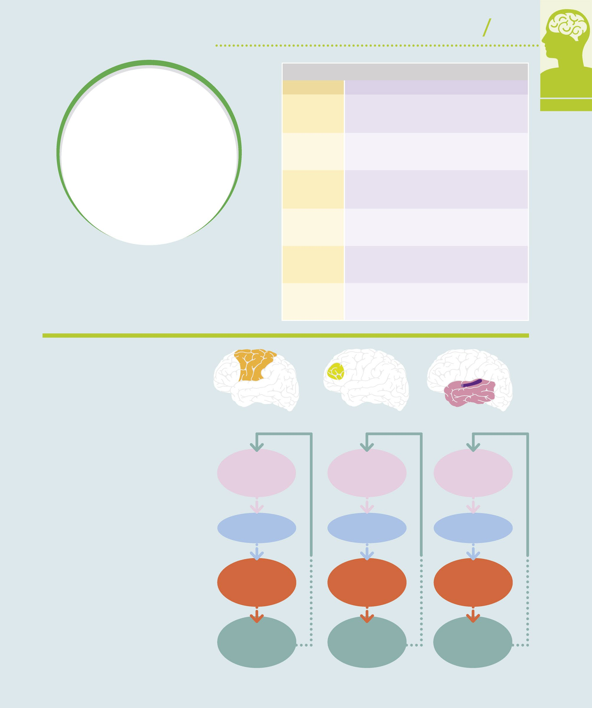
CÁC VÙNG CỦA HẠCH NỀN
NHÂN
CHỨC NĂNG
NHỮNG NHÂN NÀO NẰM Ở THÂN NÃO?
Nhân đuôi
Một trung tâm xử lý vận động liên quan đến học tập thủ tục các kiểu cử động và sự ức chế có ý thức các phản xạ.
Thân não chứa 10 trong tổng số 12 đôi nhân sọ. Chúng cung cấp chức năng vận động và cảm giác cho lưỡi, thanh quản, cơ mặt và nhiều nơi khác.
Một trung tâm kiểm soát vận động, liên quan đến các thủ tục học tập phức tạp như lái xe, gõ bàn phím hay chơi một nhạc cụ.
Putamen
Cầu nhạt
Một trung tâm kiểm soát vận động tự nguyện quản lý các cử động ở mức dưới ý thức. Khi bị tổn thương, nó có thể gây ra run không tự ý.
Nhân dưới đồi thị
Dù chức năng chính xác của nó chưa rõ, người ta cho rằng cấu trúc này liên quan đến việc chọn một cử động cụ thể và ức chế các lựa chọn cạnh tranh.
Chất đen
Đóng vai trò trong phần thưởng và vận động. Các triệu chứng của bệnh Parkinson (xem tr.201) liên quan đến sự chết của các nơ-ron dopamine tìm thấy ở đây.
BỘ NÃO CÓ HƠN 30 BỘ NHÂN, ĐA SỐ ĐƯỢC PÁI THEO CẶP TRÁI PHẢI
Hạch hạnh nhân
Có thể đóng một vai trò trong việc tích hợp hoạt động giữa các hạch nền và hệ viền, vì vậy được một số người coi là một phần của các hạch nền.
Lựa chọn hành động
Các hạch nền có vai trò quan trọng trong việc lọc bỏ nhiễu từ các mệnh lệnh cạnh tranh đến từ vỏ não và những nơi khác trong não trước. Quá trình này gọi là lựa chọn hành động, và diễn ra hoàn toàn dưới ý thức thông qua một chuỗi các đường dẫn đi qua các hạch nền. Nhìn chung, các đường dẫn này chặn hoặc ức chế một hành động cụ thể bằng cách để đồi thị vòng tín hiệu ngược lại điểm khởi đầu. Tuy nhiên, khi đường dẫn im lặng, hành động đó được tiến hành.
VÒNG VẬN ĐỘNG
VÒNG TIỀN TRÁN
VÒNG HỆ VIỀN
NGUỒN ĐẦU VÀO
Vỏ não vận động, tiền vận động và cảm giác cơ thể.
Hạch hạnh nhân, hải mã, vỏ não thái dương.
Vỏ não tiền trán lưng ngoài.
ĐIỂM VÀO
Nhân putamen.
Nhân đuôi trước.
Thể vân bụng.
ĐIỂM RA
Cầu nhạt bên, đoạn trong.
Cầu nhạt; phần lưới trong chất đen.
Các vòng hạch nền: Đường đi của một mạch phụ thuộc vào nguồn đầu vào từ vỏ não hoặc nơi khác trong não trước. Có ba mạch chính và mỗi mạch đều có thể ức chế hoặc chọn một hành động. Vòng vận động nối với trung tâm kiểm soát vận động chính, vòng tiền trán mang đầu vào từ các vùng điều hành của não, còn vòng hệ viền chịu chi phối bởi các kích thích cảm xúc.
Cầu nhạt bụng.
VÙNG ĐỒI THỊ
Các nhân bụng bên và bụng trước.
Các nhân giữa lưng và bụng trước.
Nhân giữa lưng.
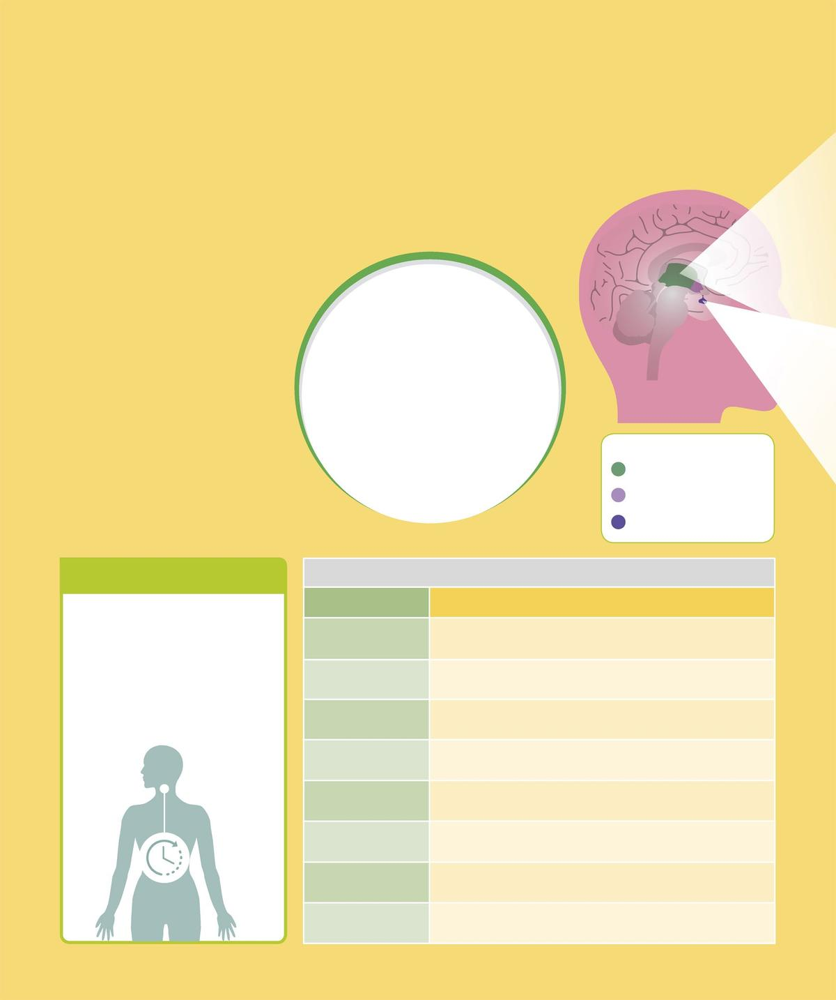
Và tuyến yên
Đồi thị và các cấu trúc xung quanh nằm ở trung tâm của não bộ. Chúng đóng vai trò như các trạm trung chuyển giữa não trước và thân não, đồng thời tạo thành một liên kết với phần còn lại của cơ thể.
Vùng dưới đồi (hypothalamus)
Vùng nhỏ này nằm dưới phần trước của đồi thị là giao diện chính giữa não bộ và hệ thống hormone, hay hệ nội tiết. Nó thực hiện điều này bằng cách giải phóng hormone trực tiếp vào dòng máu, hoặc bằng cách gửi mệnh lệnh đến tuyến yên để giải phóng các hormone đó. Vùng dưới đồi đóng vai trò trong sự tăng trưởng, cân bằng nội môi (duy trì các điều kiện tối ưu của cơ thể) và những hành vi quan trọng như ăn uống và tình dục. Điều này khiến nó đáp ứng với nhiều kích thích khác nhau.
TUYẾN YÊN KIỂM SOÁT NHỮNG TUYẾN NÀO?
Tuyến yên là một tuyến chủ kiểm soát tuyến giáp, tuyến thượng thận, buồng trứng và tinh hoàn. Tuy nhiên, nó nhận chỉ thị từ vùng dưới đồi.
CHÚ THÍCH
Đồi thị
Vùng dưới đồi
Tuyến yên
PHẢN ỨNG CỦA VÙNG DƯỚI ĐỒI
THƯỢNG ĐỒI
KÍCH THÍCH
PHẢN ỨNG
Vùng nhỏ này bao phủ phần trên của đồi thị. Nó chứa các bó dây thần kinh khác nhau tạo thành kết nối giữa não trước và não giữa. Nó cũng là vị trí của tuyến tùng — nguồn của melatonin, một hormone đóng vai trò trung tâm trong chu kỳ ngủ–thức và đồng hồ sinh học của cơ thể.
Giúp duy trì các nhịp điệu của cơ thể sau khi nhận tín hiệu về độ dài ngày từ hệ thống quang học.
Độ dài ngày
Khi mức nước trong máu giảm, giải phóng vasopressin, còn gọi là hormone chống bài niệu, làm giảm thể tích nước tiểu.
Nước
Khi dạ dày đầy, giải phóng leptin để giảm cảm giác đói.
Ăn uống
Thiếu thức ăn
Khi dạ dày rỗng, giải phóng ghrelin để tăng cảm giác đói.
Nhiễm trùng
Tăng nhiệt độ cơ thể để giúp hệ miễn dịch hoạt động nhanh hơn trong việc chống lại mầm bệnh.
Căng thẳng
Tăng sản xuất cortisol, một hormone liên quan đến việc chuẩn bị cho cơ thể một giai đoạn hoạt động thể chất.
Hoạt động cơ thể
Kích thích sản xuất các hormone tuyến giáp để tăng cường trao đổi chất, và somatostatin để làm giảm quá trình này.
Hoạt động tình dục
Điều phối việc giải phóng oxytocin, chất giúp hình thành các mối gắn kết giữa các cá nhân. Cùng một hormone này cũng được giải phóng trong lúc sinh con.
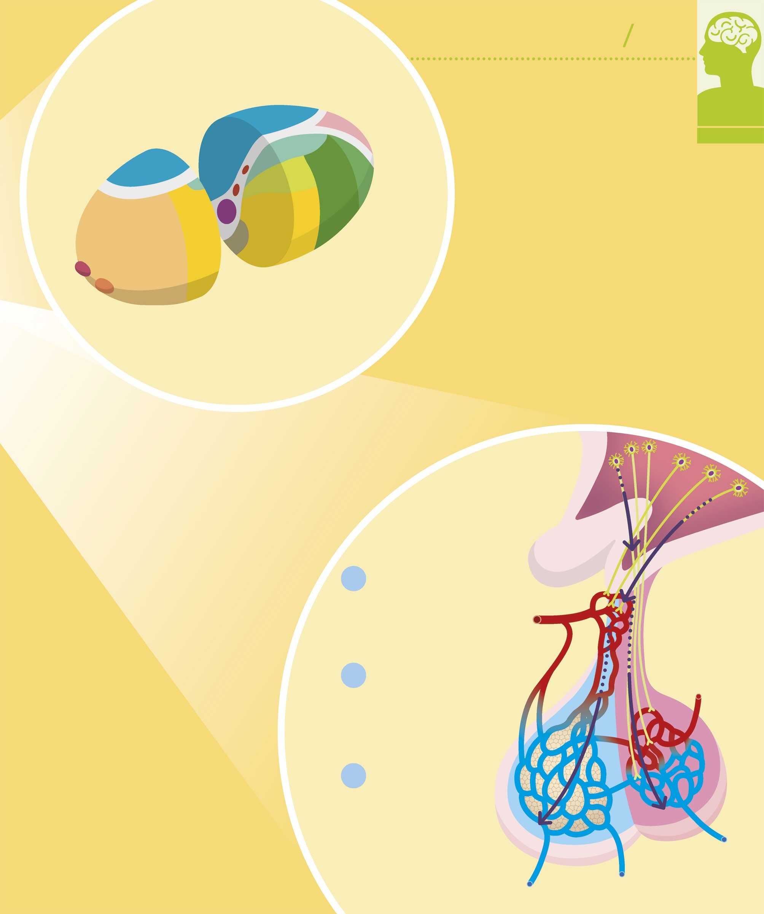
Các nhân được tách biệt bởi các lớp chất trắng.
Các tín hiệu đến cho nhân lưng trong đến từ vỏ não trước trán.
Đồi thị
Các nhân bên (pulvinar) gửi tín hiệu đến vỏ não thị giác.
THÙY TRƯỚC
Từ “thalamus” bắt nguồn từ tiếng Hy Lạp có nghĩa là “buồng bên trong”, và khối chất xám kích thước bằng ngón tay cái này nằm ở giữa não bộ, giữa vỏ não đại não và não giữa. Nó được tạo thành từ nhiều bó, hay đường, dây thần kinh, gửi và nhận tín hiệu theo cả hai hướng giữa các vùng trên và dưới của não, thường theo các vòng phản hồi (xem tr.91). Nó liên quan đến kiểm soát giấc ngủ, sự cảnh giác và ý thức. Tín hiệu từ mọi hệ thống cảm giác, ngoại trừ khứu giác, đều được dẫn qua đồi thị đến vỏ não để xử lý.
THÙY TRONG
THÙY BÊN
Tín hiệu được gửi từ vỏ não tiền vận động được tiếp nhận ở nhân trước bên.
Dữ liệu cảm giác từ miệng được truyền đến nhân sau bụng trong.
Các nhân của đồi thị Đồi thị được chia thành ba thùy chính: trong, bên và trước. Mỗi thùy lại được tổ chức tiếp thành các vùng, hay nhân, liên quan đến những nhóm chức năng cụ thể.
CHỈ NẶNG 0,1 OZ (4 G), VÙNG DƯỚI ĐỒI CHỈ LỚN HƠN ĐOẠN CUỐI CỦA NGÓN TAY ÚT MỘT CHÚT
VÙNG DƯỚI ĐỒI
Các tế bào tiết trong vùng dưới đồi giải phóng hormone.
Kích thích Các hormone được tạo ra
1
Tuyến yên
bởi vùng dưới đồi đi dọc theo sợi trục đến tuyến yên.
Nặng khoảng 0,01 oz (0,5 g), tuyến yên nhỏ bé này sản xuất nhiều hormone quan trọng nhất của cơ thể dưới sự chỉ đạo của vùng dưới đồi. Các hormone được giải phóng vào máu thông qua một mạng lưới mao mạch nhỏ. Các hormone của tuyến yên bao gồm những hormone kiểm soát tăng trưởng, bài tiết nước tiểu, chu kỳ kinh nguyệt, sinh con và sự sạm da. Dù có thể tích bằng một hạt đậu, tuyến này được chia thành hai thùy chính, trước và sau, cộng thêm một thùy trung gian nhỏ. Mỗi thùy đảm nhiệm sản xuất một nhóm hormone cụ thể.
Động mạch
Thùy sau của tuyến yên
Mạng lưới tĩnh mạch
Sản xuất Các hóa chất từ
2
vùng dưới đồi kích thích tuyến yên giải phóng hormone.
TUYẾN YÊN
Thùy trước của tuyến yên
Giải phóng Hệ thống dạng lưới
3
cửa thu thập các hormone và giải phóng chúng vào dòng máu.
Hormone đi vào dòng máu.
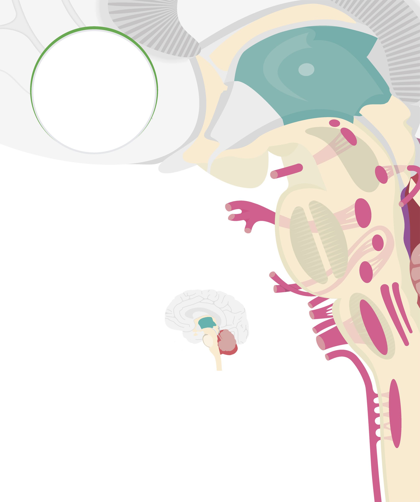
Đồi thị liên kết thân não với não trước, chuyển tiếp và xử lý sơ bộ thông tin cảm giác cùng các thông tin khác.
TIỂU NÃO LỚN ĐẾN MỨC NÀO?
ĐỒI THỊ
Hầu hết các tế bào của não nằm ở tiểu não, dù nó chỉ chiếm khoảng 10 phần trăm thể tích của toàn bộ não bộ.
Não giữa liên quan đến kiểm soát trạng thái thức giấc và nhiệt độ cơ thể.
NÃO GIỮA
Kết nối não bộ Thân não có dạng cuống tạo thành liên kết giữa đồi thị, đáy của não trước và tủy sống, vốn kết nối với phần còn lại của cơ thể. Nó tham gia nhiều chức năng cơ bản, bao gồm chu kỳ ngủ–thức, ăn uống và điều hòa nhịp tim.
Cầu não là một con đường liên lạc lớn truyền tải các dây thần kinh sọ được dùng cho hô hấp, thính giác và vận động mắt.
THÂN NÃO
Thân não
Thân não được tạo thành từ ba thành phần, tất cả đều có vai trò thiết yếu trong nhiều chức năng cơ bản nhất của cơ thể người. Não giữa là điểm khởi đầu của hệ lưới kích thích (reticular formation), một chuỗi các nhân não (xem tr.32–33) chạy dọc thân não, liên quan đến sự thức giấc và cảnh giác, đồng thời đóng vai trò then chốt trong ý thức. Cầu não là một chuỗi nhân khác gửi và nhận tín hiệu từ các dây thần kinh sọ liên quan đến mặt, tai và mắt. Tủy não đi xuống và thu hẹp dần để hợp nhất với đầu trên cùng của tủy sống. Nó đảm nhiệm nhiều chức năng tự động của cơ thể, như điều hòa huyết áp, đỏ mặt và nôn mửa.
CẦU NÃO
10 đôi dây thần kinh sọ bắt nguồn từ thân não.
TỦY NÃO
ĐỒI THỊ
THÂN NÃO · TIỂU NÃO
Các dây thần kinh sọ bắt đầu và kết thúc tại các nhân trong thân não.
Thân não và tiểu não
Tủy não tham gia các phản xạ quan trọng như nhịp thở và nuốt.
Tủy sống gồm một bó sợi trục thần kinh kết nối với hệ thần kinh ngoại vi.
Các vùng thấp của não gồm thân não, kết nối trực tiếp với tủy sống, và tiểu não, nằm ngay phía sau nó.

Thân não và tiểu não
NHÌN TỪ PHÍA SAU TIỂU NÃO
Tiểu não Thuật ngữ “tiểu não” nghĩa là “não nhỏ”, chỉ một vùng có nhiều nếp gấp của não sau nằm phía sau thân não. Giống như đại não ở phía trên, tiểu não được chia thành hai thùy. Các thùy này lại được chia theo chiều ngang thành các vùng chức năng.
Phần nhộng kiểm soát hầu hết các kiểu vận động cơ bản, như vận động mắt và chi.
Lớp ngoài được tạo thành từ chất xám.
Thùy trước của tiểu não nhận thông tin về tư thế cơ thể từ tủy sống.
TIỂU NÃO TỦY · PHẦN NHỘNG · THÙY TRƯỚC
Nằm ở cả hai bên tiểu não, các vùng này tham gia lập kế hoạch cho các chuỗi vận động.
Các vận động của cơ thể được phối hợp ở thùy sau.
VÙNG BÊN
THÙY TRƯỚC
Tiểu não tủy so sánh thông tin về vị trí thực tế của cơ thể với vị trí dự định của các động tác đã lên kế hoạch và điều chỉnh chuỗi vận động khi cần.
Tiểu não
Dù tiểu não có vẻ đóng một vai trò trong duy trì sự chú ý và xử lý ngôn ngữ, nó được biết đến nhiều nhất với vai trò điều hòa vận động cơ thể. Cụ thể, nhiệm vụ của nó là chuyển các yêu cầu vận động điều hành rộng rãi thành những chuỗi cơ trơn tru và phối hợp, đồng thời liên tục hiệu chỉnh sai số. Nó dẫn các đầu ra của mình qua đồi thị. Ở cấp độ vi mô, các tế bào của tiểu não được xếp thành từng lớp. Mục đích của các lớp này là thiết lập những đường dẫn thần kinh cố định cho mọi kiểu vận động đã học, chẳng hạn như đi lại, nói chuyện và giữ thăng bằng. Tổn thương tiểu não không gây liệt, mà gây ra các vận động chậm và giật cục.
THÙY SAU
TIỂU NÃO TIỀN ĐÌNH
TIỂU NÃO
TIỂU NÃO VÀ CÁC MẠNG THẦN KINH
Tiểu não tiền đình tham gia kiểm soát đầu, vận động mắt và duy trì thăng bằng nhờ thông tin từ tai trong.
Một số trí tuệ nhân tạo (AI) sử dụng một hệ thống lấy cảm hứng từ giải phẫu của tiểu não. AI tự lập trình thông qua học máy. Nó làm điều này với một bộ xử lý gọi là mạng thần kinh, trong đó các đầu vào tìm đường đi của mình bằng thử và sai qua các lớp kết nối — một thiết kế phản ánh cách tiểu não thiết lập các khuôn mẫu cho những vận động đã học.
KIẾN THỨC VỀ TIỂU NÃO ĐÃ ĐƯỢC THÚC ĐẨY NHỜ NGHIÊN CỨU CÁC BINH SĨ BỊ THƯƠNG NÃO TRONG CHIẾN TRANH THẾ GIỚI THỨ NHẤT
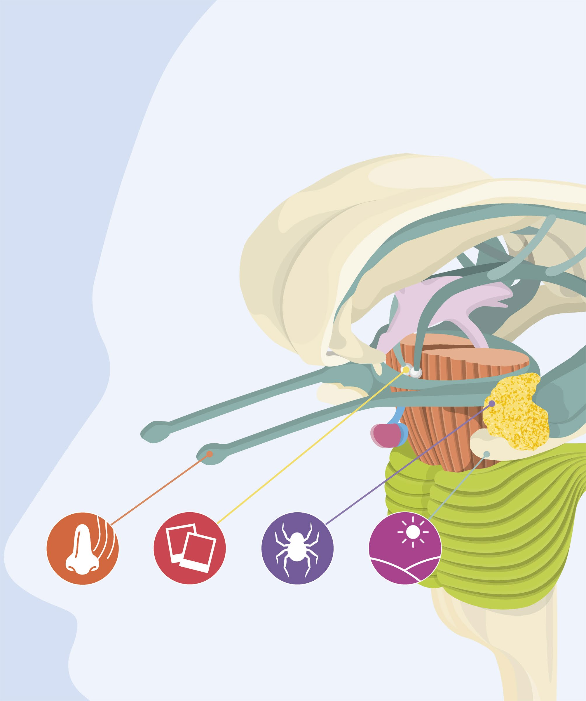
HẢI MÃ ĐƯỢC ĐẶT TÊN THEO SỰ GIỐNG HỆT VỚI CON NGỰA BIỂN
Hệ thống
Nằm bên dưới vỏ não và phía trên thân não, hệ viền não (limbic system) là một tập hợp các cấu trúc liên quan đến cảm xúc, trí nhớ và các bản năng cơ bản.
Fornix (vòm não) là một bó đường dẫn thần kinh nối hải mã với đồi thị và não bộ bên dưới.
Vị trí và chức năng
Hệ viền não là một cụm các cơ quan nằm ở trung tâm của não bộ, chiếm một phần bề mặt trong của vỏ não đại não. Các cấu trúc chính của nó tạo thành một nhóm mô-đun truyền tín hiệu giữa vỏ não và các phần thấp hơn của não. Các sợi trục thần kinh liên kết mọi bộ phận của nó và kết nối chúng với các vùng não khác. Hệ viền não điều hòa các thúc đẩy bản năng như hung hăng, sợ hãi và ăn uống, cùng với học tập, trí nhớ và các hoạt động tinh thần bậc cao.
Hồi đai
FORNIX (VÒM NÃO)
Cột của vòm não
CÁC THỂ NÚM
NÃO GIỮA
HẠCH HẠNH NHÂN
Các bộ phận của hệ thống Các thành phần của hệ viền não kéo dài từ đại não vào trong và xuống đến thân não. Thường thì người ta hiểu hệ này bao gồm các cấu trúc được trình bày ở đây.
VÙNG DƯỚI ĐỒI
CỦ HẾU
HỒI CẠNH HẢI MÃ
Điều kiện hóa nỗi sợ
KÝ ỨC MỚI
CẢM GIÁC KHỨU GIÁC
SỰ NHẬN BIẾT
Khứu giác, được xử lý ở các củ hếu, là giác quan duy nhất do hệ viền não xử lý mà không được gửi qua đồi thị.
Các thể núm nhỏ đóng vai trò như các trạm trung chuyển cho những ký ức mới hình thành ở vùng dưới đồi; chúng liên quan đến điều kiện hóa nỗi sợ, khi chúng ta học cách sợ một điều gì đó. Tổn thương dẫn đến không có khả năng cảm nhận nỗi sợ. Các thể núm này cũng đặc biệt tham gia vào trí nhớ và phản ứng cảm xúc, liên quan đến cảm giác định hướng, nhất là với vị trí.
Hạch hạnh nhân đóng vai trò quan trọng nhất
Tham gia hình thành và truy xuất các ký ức liên quan đến dữ liệu mới từ giác quan, hồi cạnh hải mã giúp chúng ta nhận biết và nhớ lại sự vật.

Thưởng và phạt
THUẬT NGỮ “LIMBIC” NGHĨA LÀ GÌ?
Hệ viền não liên quan chặt chẽ với cảm giác giận dữ và hài lòng. Cả hai đều do kích thích các trung tâm thưởng hoặc phạt bên trong hệ viền não, đặc biệt là ở vùng dưới đồi. Thưởng và phạt là những khía cạnh then chốt của học tập, vì chúng tạo ra một phản ứng cơ bản đối với trải nghiệm. Nếu không có hệ thống đánh giá này, não bộ đơn giản sẽ bỏ qua các kích thích cảm giác cũ mà nó đã từng trải qua và chỉ chú ý đến kích thích mới.
Từ “limbic” bắt nguồn từ tiếng Latin limbus, nghĩa là “ranh giới”, ám chỉ vai trò của hệ này như một vùng chuyển tiếp giữa vỏ não và não thấp hơn.
Khoái cảm Liên quan đến việc giải phóng dopamine, não bộ tìm cách lặp lại những hành vi tạo ra cảm giác này.
Ghét bỏ Cảm xúc này liên quan đến khứu giác. Vai trò nguyên thủy của nó là bảo vệ chúng ta khỏi nhiễm trùng.
Sợ hãi Hạch hạnh nhân liên kết nỗi sợ với các kích thích cụ thể. Điều này có thể dẫn đến cơn giận dữ được kiểm soát hoặc phản ứng chiến đấu.
HẢI MÃ
Hồi đai giúp hình thành các ký ức liên quan đến cảm xúc mạnh.
Hội chứng Klüver-Bucy
TRIỆU CHỨNG
MÔ TẢ
Tình trạng này do tổn thương hệ viền não gây ra và dẫn đến một dải triệu chứng liên quan đến mất sợ hãi và mất kiểm soát xung động. Được mô tả lần đầu ở người vào năm 1975, rối loạn thần kinh này được đặt theo tên các nhà nghiên cứu Heinrich Klüver và Paul Bucy những năm 1930, những người đã tiến hành thí nghiệm cắt bỏ các vùng não khác nhau ở khỉ còn sống và ghi lại tác động. Ở người, hội chứng có thể do bệnh Alzheimer, biến chứng từ virus herpes hoặc tổn thương não. Nó lần đầu được ghi nhận ở những người đã phẫu thuật cắt bỏ một phần thùy thái dương của não. Tình trạng này có thể điều trị bằng thuốc và hỗ trợ các công việc hằng ngày.
Tổn thương hải mã dẫn đến không có khả năng hình thành ký ức dài hạn.
Mất trí nhớ
Vì cảm nhận rất ít phần thưởng từ hành động của mình, người bệnh thiếu động lực.
Hiền lành
Xu hướng kiểm tra đồ vật bằng cách đưa chúng vào miệng.
Hyperorality (ưa đưa đồ vào miệng)
Ký ức tình tiết
Ăn uống cưỡng bức, kể cả các chất không ăn được như đất.
Chứng pica
Ham muốn tình dục cao, thường liên quan đến fetish hoặc các ham muốn không điển hình.
Hải mã tiếp nhận và xử lý các đầu vào từ đại não. Nó tham gia tạo ra các ký ức tình tiết, tức ký ức về những gì bạn đã làm, và tạo ra nhận thức không gian.
Tăng ham muốn tình dục
Mất khả năng nhận ra những đồ vật hoặc người quen thuộc.
Mất nhận thức (agnosia)
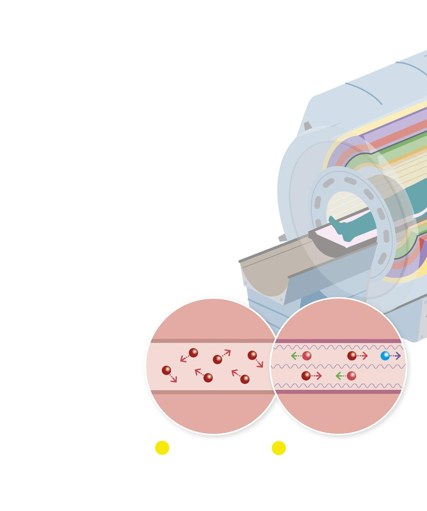
Lớp cách nhiệt giữ cho helium lỏng luôn lạnh.
Y học hiện đại và thần kinh học có thể nhìn xuyên qua hộp sọ để quan sát các cấu trúc bên trong não đang sống. Tuy nhiên, việc chụp ảnh cơ quan mềm và phức tạp này đòi hỏi phải phát minh ra công nghệ tiên tiến.
Helium lỏng làm mát nam châm điện đến khoảng –453°F (–270°C).
Máy chụp MRI
Siêu dẫn
HELIUM LỎNG
Máy chụp cộng hưởng từ (MRI) cho cái nhìn tổng quát tốt nhất về mô thần kinh của não và thường được dùng nhất để tìm khối u. Khác với các hệ thống quét khác, MRI không phơi nhiễm não với bức xạ năng lượng cao, nhờ đó an toàn khi sử dụng trong thời gian dài và nhiều lần. Hai cải tiến của MRI, gọi là fMRI và DTI, cũng hữu ích trong theo dõi hoạt động não (xem tr.43). Dù là công cụ lý tưởng cho nghiên cứu và chẩn đoán, MRI rất đắt tiền. Với hệ thống làm mát bằng helium lỏng và nam châm điện siêu dẫn, một máy còn tiêu thụ điện bằng sáu hộ gia đình.
nam châm điện tạo ra từ trường cực mạnh.
Các nam châm gradient hội tụ từ trường quanh vùng cần quét.
Cuộn radio tần phát và dò sóng vô tuyến.
Bệnh nhân nằm bên trong thân máy trong lúc quét.
BÀN DI ĐỘNG
Bàn di động đưa bệnh nhân vào máy quét.
Cách MRI hoạt động MRI tận dụng cách các proton trong nguyên tử hydro sắp thẳng hàng theo từ trường. Hydro có trong nước và chất béo, cả hai đều phổ biến trong não. Một lần quét mất khoảng một giờ, sau đó dữ liệu được xử lý để tạo ra hình ảnh chi tiết.
Proton bổ sung hướng về phía nam.
Các proton sắp xếp ngẫu nhiên.
NAM CHÂM ĐIỆN KHÔNG HOẠT ĐỘNG
NAM CHÂM ĐIỆN ĐANG HOẠT ĐỘNG
Proton hướng về phía nam.
Đường từ trường.
NAM CHÂM ĐIỆN ĐANG HOẠT ĐỘNG
NAM CHÂM ĐIỆN KHÔNG HOẠT ĐỘNG
Proton hướng về phía bắc.
NAM CHÂM ĐIỆN TRONG MÁY MRI CÓ THỂ TẠO RA TỪ TRƯỜNG MẠNH HƠN 40.000 LẦN SO VỚI TỪ TRƯỜNG CỦA TRÁI ĐẤT
Proton chưa sắp thẳng Trước khi máy MRI được
Proton sắp thẳng theo từ trường Kích hoạt từ trường mạnh mẽ của máy
2
1
kích hoạt, các proton trong phân tử của não ở trạng thái chưa sắp thẳng — các trục mà hạt quay quanh hướng về những phía ngẫu nhiên.
buộc mọi proton phải sắp thẳng hàng với nhau. Khoảng một nửa hướng về cực bắc của từ trường, một nửa hướng về cực nam. Tuy nhiên, luôn có một cực có số proton hướng về nó nhiều hơn đôi chút so với cực kia.

MÁY QUÉT MRI
Người đang được quét.
Máy dò tia X.
Chụp CT
Chụp cắt lớp vi tính (CT), hay chụp cắt lớp vi tính trục (CAT), lấy một chuỗi ảnh tia X xuyên qua não từ các góc khác nhau. Sau đó máy tính so sánh các ảnh này để tạo ra một mặt cắt ngang duy nhất của não. Chụp CT nhanh hơn MRI và tốt nhất để phát hiện đột quỵ, gãy hộp sọ và xuất huyết não.
Nguồn phát tia X.
Tia X quay Nguồn tia X chiếu xuyên qua não, đi vòng quanh bệnh nhân để thay đổi góc của mỗi ảnh.
CÁC LOẠI CÔNG NGHỆ QUÉT KHÁC
Chụp một số đặc điểm nhất định của não đòi hỏi kỹ thuật quét riêng, cũng có thể dùng khi MRI hoặc CT nguy hiểm hoặc không phù hợp.
CUỘN RADIO TẦN · NAM CHÂM GRADIENT · NAM CHÂM ĐIỆN
LOẠI QUÉT
CÔNG NGHỆ VÀ CÔNG DỤNG
Được dùng để chụp dòng máu chảy qua não và làm nổi bật các vùng hoạt động. Chụp PET theo dõi vị trí của các chất đánh dấu phóng xạ được tiêm vào máu.
PET (chụp cắt lớp phát xạ positron)
Một loạt kỹ thuật mới hoạt động bằng cách dò xem ánh sáng hoặc tia hồng ngoại xuyên vào não nhiều hay ít. DOI cung cấp cách theo dõi lưu lượng máu và hoạt động não.
DOI (chụp ảnh quang học khuếch tán)
Kỹ thuật chụp an toàn dựa trên cách sóng siêu âm phản xạ lại từ các cấu trúc trong não. Siêu âm qua hộp sọ chủ yếu dùng cho trẻ sơ sinh. Ít dùng hơn ở người lớn vì hình ảnh thiếu chi tiết.
Siêu âm qua hộp sọ
Proton đã lật trở lại sắp thẳng.
Máy tính xử lý dữ liệu tín hiệu.
Xung sóng vô tuyến.
Hình ảnh cho thấy các mô theo mặt cắt ngang.
CUỘN RADIO TẦN
CUỘN RADIO TẦN
MÁY TÍNH
MÀN HÌNH
CUỘN RADIO TẦN
CUỘN RADIO TẦN
Cuộn radio tần dò tín hiệu và chuyển đến máy tính.
Proton bổ sung lật sang hướng khác.
Tín hiệu vô tuyến được phát ra.
Một xung sóng vô tuyến Khi từ trường đang bật, máy MRI
Tín hiệu vô tuyến được phát Ngay sau khi xung được tắt,
Bộ thu tạo hình ảnh Toàn bộ dữ liệu tín hiệu sau đó được xử lý bởi
3
4
5
cuộn radio tần của máy gửi một xung sóng vô tuyến xuyên qua não. Lượng năng lượng bổ sung này khiến các proton dự phòng lật ra khỏi hướng sắp thẳng.
các proton chưa sắp thẳng lật trở lại sắp thẳng với từ trường. Điều này khiến chúng giải phóng năng lượng dưới dạng tín hiệu vô tuyến, được máy dò. Máy tính xử lý tín hiệu để tạo ra các “lát cắt” hai chiều của não. Các proton trong mô cơ thể khác nhau tạo ra tín hiệu khác nhau, nên ảnh quét có thể cho thấy các mô riêng biệt và rất chi tiết.

Khả năng thu thập thông tin từ một não bộ đang hoạt động đã cách mạng hóa cả sự hiểu biết của chúng ta về cách não vận hành lẫn y học thần kinh.
TẠI SAO
NÃO LẠI TẠO RA TỪ TRƯỜNG ĐIỆN TỪ?
EEG
Thiết bị theo dõi não đơn giản nhất là điện não đồ (EEG). Nó dùng các điện cực đặt khắp hộp sọ để dò một trường điện do hoạt động của các tế bào thần kinh ở vỏ não đại não tạo ra. Các mức dao động có thể được hiển thị dưới dạng sóng (“EEG thường”) hoặc vùng màu (EEG định lượng, hay QEEG). EEG có thể phát hiện dấu hiệu của rối loạn co giật như động kinh, cũng như dấu hiệu tổn thương, viêm và khối u. Quy trình không đau này cũng được dùng để đánh giá hoạt động não ở bệnh nhân hôn mê.
Các tế bào thần kinh dùng xung điện tích để truyền thông điệp. Hoạt động của hàng tỷ tế bào tích tụ thành một trường liên tục.
Các loại sóng EEG Các tế bào lân cận ở vỏ não phát xung đồng bộ, tạo ra những thay đổi dạng sóng về cường độ của trường điện. Người ta thấy các kiểu sóng đặc trưng (được đặt theo chữ cái trong bảng chữ cái Hy Lạp) có liên quan chặt chẽ với một số trạng thái não nhất định.
Các sóng tần số cao được xếp sát nhau.
SÓNG GAMMA
HƠN 32 Hz
Các sóng tần số thấp được xếp thưa hơn.
Biên độ.
SÓNG BETA
SÓNG DELTA
Thời gian.
Nhịp điệu này liên quan đến học tập và các nhiệm vụ giải quyết vấn đề phức tạp. Chúng có thể bắt nguồn từ việc các nhóm tế bào thần kinh kết hợp lại thành mạng lưới.
0,1–4 Hz
Biên độ.
14–32 Hz
Biên độ.
Thời gian.
Thời gian.
Bắt nguồn từ cả hai bán cầu ở phía trước não, sóng beta liên quan đến hoạt động thể chất và các trạng thái tập trung cùng lo âu.
Những sóng này thường thấy ở một số giai đoạn của giấc ngủ, nhưng cũng khi người ta đang làm nhiệm vụ giải quyết vấn đề phức tạp.
SÓNG ALPHA
SÓNG THETA
8–14 Hz
4–8 Hz
Biên độ.
Biên độ.
Thời gian.
Thời gian.
Những sóng này thường bắt nguồn từ phía sau não và thường mạnh hơn ở bán cầu chi phối. Chúng xuất hiện cả khi thư giãn lẫn khi tỉnh táo.
Các điện cực được giữ sát hộp sọ bằng mũ.
Thường thấy ở trẻ nhỏ, sóng theta cũng rõ rệt trong các trạng thái thư giãn, sáng tạo và thiền định.
Dây dẫn tín hiệu đến bộ khuếch đại.

MEG
MRI chức năng và chụp cắt lớp ten-xo khuếch tán
Ngoài việc tạo ra hoạt động điện, não còn tạo ra một từ trường rất yếu. Từ trường này được máy chụp từ não (MEG) dò ra và có thể dùng để tạo bức tranh thời gian thực về hoạt động của vỏ não đại não. MEG bị hạn chế bởi độ yếu của từ tính não, nhưng kỹ thuật này dò được những biến động nhanh trong hoạt động não — diễn ra trong vài phần nghìn giây — tốt hơn các hệ thống theo dõi khác.
MRI (xem tr.40–41) có thể mở rộng để thu thập thông tin về việc não đang làm gì. Chụp MRI chức năng (fMRI) theo dõi dòng máu chảy qua não, cụ thể cho thấy nơi máu cung cấp oxy cho tế bào thần kinh, từ đó chỉ ra vùng nào đang hoạt động theo thời gian thực. Người được chụp được yêu cầu thực hiện nhiệm vụ tinh thần và thể chất trong lúc theo dõi bằng fMRI để tạo bản đồ chức năng của não và tủy sống, kết hợp giải phẫu với mức độ hoạt động. Chụp cắt lớp ten-xo khuếch tán (DTI) cũng dùng MRI nhưng theo dõi sự di chuyển tự nhiên của nước qua các tế bào não. Nó được dùng để dựng bản đồ các kết nối chất trắng trong não.
Mảng SQUID có dạng mũ đội đầu.
Vỏ não đại não.
Hướng của xung thần kinh.
Từ trường quanh xung thần kinh.
Cách MEG hoạt động MEG dùng các đầu dò nhạy gọi là thiết bị giao thoa lượng tử siêu dẫn (SQUID) để dò các từ trường thoáng qua do xung điện của tế bào thần kinh tạo ra.
PHẢN HỒI THẦN KINH
Vùng hoạt động tăng lên.
Dạng liệu pháp nhận thức này dùng EEG để tạo vòng phản hồi giữa trạng thái tinh thần của một người và hoạt động não của họ. Điều này giúp người ta dễ học cách kiểm soát hoạt động tinh thần không mong muốn, chẳng hạn lo âu.
1
EEG ghi lại hoạt động điện trong não.
4
2
Máy tính biến các kiểu thần kinh thành một hiển thị động, chẳng hạn trò chơi tương tác.
Qua luyện tập, não hình thành thói quen ở trạng thái được thưởng.
Vùng hoạt động giảm đi.
3
Trò chơi đưa phần thưởng khi ghi nhận đúng trạng thái não yêu cầu (ví dụ, lo âu thấp).
Đọc ảnh fMRI Một lần chụp fMRI bắt đầu bằng việc thiết lập mức nền hoạt động của não. Sau đó bản quét cho thấy các vùng dao động so với mức nền này, giúp nhà nghiên cứu xác định vùng nào được kích thích hoặc bị ức chế trong các nhiệm vụ cụ thể.
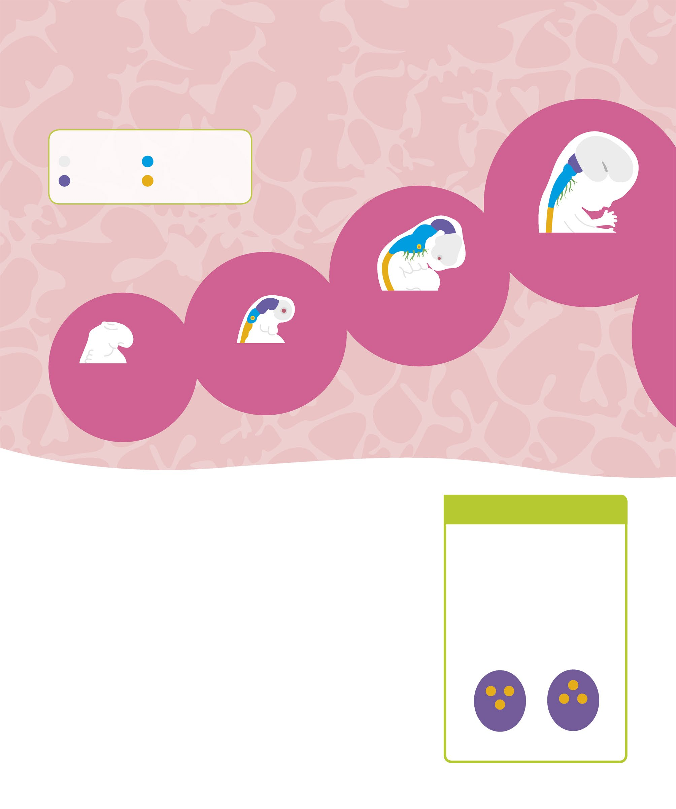
Sự phát triển của não bộ Những tế bào thần kinh đầu tiên được tạo ra chỉ vài ngày sau khi thụ thai. Các tế bào này tạo thành một bản rồi cuộn lại để trở thành một cấu trúc chứa đầy dịch, gọi là ống thần kinh (neural tube), sau đó phát triển thành não bộ và tủy sống. Một đầu trở thành một chỗ phình rồi tách thành các vùng riêng biệt.
Đại não
Tiểu não
CHÚ THÍCH
Não trước
Não sau
Não giữa
Tủy sống
Thân não
Mầm mắt
Mầm tai
Dây thần kinh sọ
Đại não phình to, và mắt cùng tai phát triển hoàn thiện, di chuyển vào vị trí. Một số bộ phận trên cơ thể thai nhi có thể phản ứng với chạm xúc.
Mầm tai
Ống thần kinh
Đến tuần thứ bảy, não trước, não giữa và não sau chia thành các chỗ phình sẽ trở thành đại não, thân não, S K và tiểu não. E E W 7
Mầm mắt
Ống thần kinh hình thành
1 1
S K E W E
Chỗ phình não trước
Khoảng tuần thứ năm, ống thần kinh bắt đầu hình thành nên thứ có thể nhận ra là não bộ. Mắt bắt đầu S K phát triển. E E W 5
Các tế bào thần kinh phát triển, di cư khắp phôi thai để hình thành khởi đầu của não bộ, tủy sống và mạng lưới thần kinh. S K E E W 3
Trẻ sơ sinh và trẻ nhỏ
NHẬN DIỆN KHUÔN MẶT
Trẻ sơ sinh thích nhìn vào những hình giống khuôn mặt và học hỏi về khuôn mặt rất nhanh. Một vùng của vỏ não gọi là vùng nhận diện khuôn mặt (xem tr.68) trở nên chuyên biệt trong việc xác định khuôn mặt. Các nhà vô địch cờ vua cũng dùng vùng này để nhận ra cách bố trí bàn cờ, gợi ý rằng những khuôn mẫu quan trọng nhất trong cuộc đời một người được giải mã tại đây.
Não người bắt đầu phát triển sau khi thụ thai và thay đổi nhanh chóng trong những năm đầu đời, nhưng phải mất hơn 20 năm để não phát triển hoàn thiện.
Trước khi sinh
Não của phôi thai còn phải phát triển rất nhiều, từ chỉ vài tế bào thần kinh ở ba tuần sau khi thụ thai đến một cơ quan có các vùng chuyên biệt sẵn sàng bắt đầu học hỏi ngay từ lúc sinh. Gen kiểm soát quá trình này, nhưng môi trường cũng có thể ảnh hưởng. Dinh dưỡng không đầy đủ có thể làm thay đổi sự phát triển của não, và căng thẳng cực độ ở người mẹ trong thời kỳ mang thai cũng có thể gây tác động.
GIỐNG KHUÔN MẶT
KHÔNG GIỐNG KHUÔN MẶT
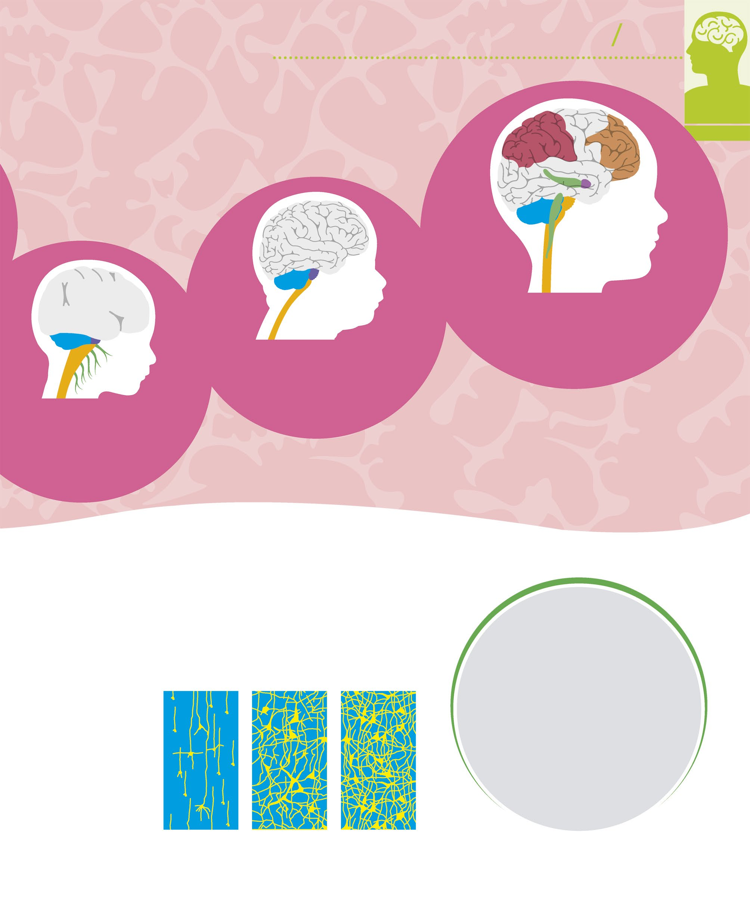
Đại não
Đường nét của vỏ não
Vỏ não trước trán
Đảo nằm sâu bên trong rãnh bên
Vỏ não trước trán
Các gờ não hình thành
Hạch hạnh nhân
Thùy trán
Vỏ não đỉnh
Hệ tạo lưới
Hải mã
Các rãnh não hình thành
Các vùng cảm giác và vận động của não được kết nối và phát triển tốt, nhưng những vùng lớn như vỏ não trước trán vẫn còn chưa hoàn thiện. Những thay đổi ở hải mã S và hạch hạnh nhân giúp các trí nhớ dài hạn AR YE được lưu giữ. 3
Tiểu não
Thân não
Trong những tháng cuối của thời kỳ thai nghén, vỏ não phát triển nhanh chóng, và các rãnh đặc trưng xuất hiện. Trẻ sinh ra có số tế bào thần kinh H T R nhiều bằng người lớn, nhưng phần lớn BI / chưa hoàn thiện. S H T N O M 9
Tiểu não
Thân não phần lớn đã hoàn thiện và kiểm soát các phản xạ như chớp mắt. Chu kỳ ngủ – thức bắt đầu, và thai nhi phản ứng với S H tiếng ồn lớn. T N O M 5
Ở ĐỈNH CAO CỦA SỰ PHÁT TRIỂN NÃO, KHOẢNG 250.000 TẾ BÀO THẦN KINH ĐƯỢC TẠO RA MỖI PHÚT
Não của trẻ em
Sau khi sinh, não của trẻ như những tấm bọt biển; chúng có khả năng đáng kinh ngạc trong việc hấp thụ thông tin từ thế giới xung quanh và cố gắng hiểu được ý nghĩa của nó. Trong những năm đầu, não phát triển nhanh chóng, thể tích não tăng gấp đôi trong năm đầu đời. Các khớp thần kinh phát triển và tạo ra các kết nối mới nhanh chóng và dễ dàng, một quá trình gọi là tính dẻo thần kinh (neuroplasticity).
TẠI SAO NÃO CHÚNG TA LẠI NHĂN NHEO?
Khi trí thông minh của con người tiến hóa, vỏ não của chúng ta đã mở rộng. Nhưng cái đầu lớn hơn sẽ có nghĩa là trẻ không thể lọt qua ống sinh. Một vỏ não được gấp nếp chứa nhiều mô hơn vào một thể tích nhỏ hơn.
Xây dựng các kết nối Đỉnh điểm dẻo của mỗi vùng não là khác nhau. Các vùng cảm giác tạo khớp thần kinh nhanh chóng ở bốn đến tám tháng sau khi sinh, nhưng các vùng trước trán không đạt đỉnh dẻo cho đến khi trẻ khoảng 15 tháng tuổi.
TRẺ SƠ SINH
9 THÁNG
2 TUỔI
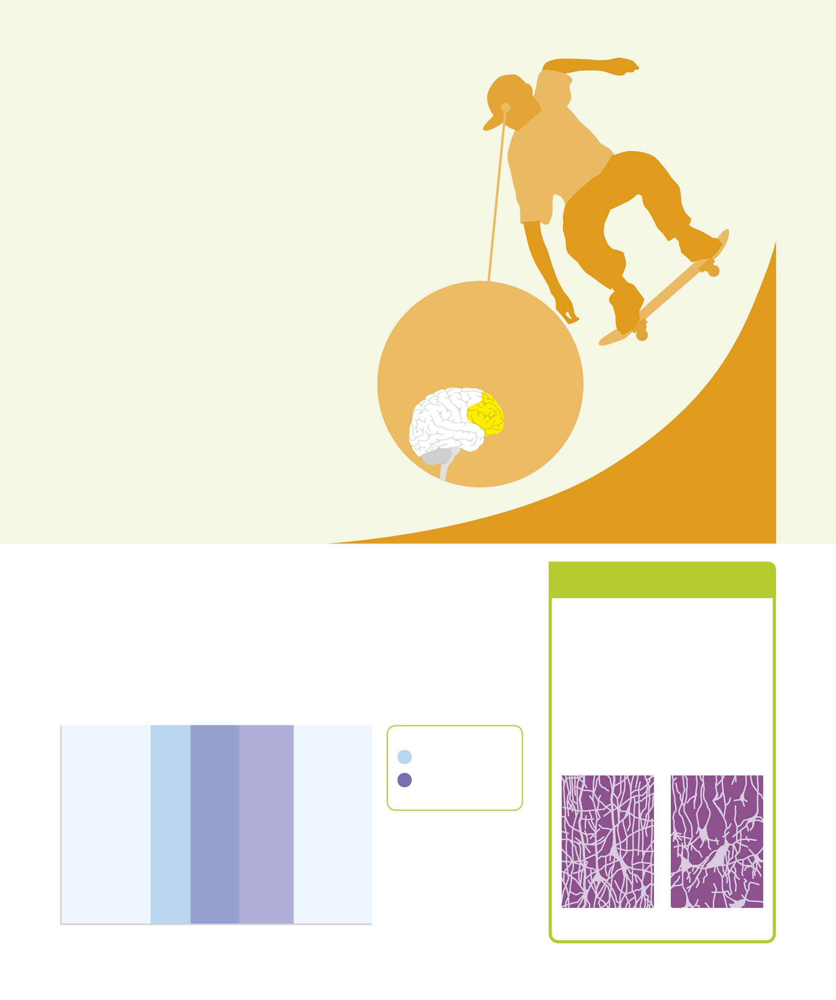
và thanh thiếu niên
Não thanh thiếu niên trải qua sự tái cấu trúc mạnh mẽ. Các kết nối không được dùng bị cắt bỏ, và bao myelin bao phủ những kết nối quan trọng nhất, làm chúng hiệu quả hơn.
Hành vi thời vị thành niên
Thanh thiếu niên có tiếng là bốc đồng, nổi loạn, ích kỷ và dễ xúc động. Phần lớn điều đó là do những thay đổi đang diễn ra trong não của vị thành niên. Não người thay đổi và phát triển theo những khuôn mẫu nhất định, khiến thanh thiếu niên có sự pha trộn giữa các vùng não hoàn thiện và chưa hoàn thiện khi họ lớn lên. Vùng cuối cùng hoàn thiện là vỏ não trán, vùng điều hòa não bộ và kiểm soát xung động. Vùng này cho phép người lớn tự kiểm soát cảm xúc và ham muốn của mình, điều mà thanh thiếu niên có thể gặp khó khăn.
Chấp nhận rủi ro Các vùng tìm kiếm khoái cảm trong não thanh thiếu niên được kết nối tốt, nhưng cơ chế kiểm soát xung động lại chưa phát triển đầy đủ, có thể dẫn đến hành vi chấp nhận rủi ro.
Vỏ não trán
Chu kỳ giấc ngủ
CẮT TỈA KHỚP THẦN KINH
Trong những năm vị thành niên, chúng ta cần ngủ nhiều vì não vẫn tiếp tục phát triển. Nhưng vào thời điểm này, nhịp sinh học của chúng ta thay đổi khi melatonin – hormone được giải phóng vào buổi tối và làm ta buồn ngủ – bắt đầu được giải phóng muộn hơn thường lệ. Đây là lý do thanh thiếu niên thường muốn đi ngủ muộn hơn trẻ em và người lớn, và có thể gặp khó khăn khi dậy đi học vào buổi sáng.
Cắt tỉa khớp thần kinh, tức là khi các kết nối thần kinh không được dùng chết dần, bắt đầu từ thời thơ ấu và tiếp diễn suốt những năm vị thành niên. Các vùng vỏ não được cắt tỉa từ sau ra trước. Việc cắt tỉa làm mỗi vùng hiệu quả hơn, vì vậy cho đến khi hoàn tất, vùng đó chưa thể được coi là hoàn thiện.
CHÚ THÍCH
Thời điểm bắt đầu ngủ ở người lớn
Thời gian ngủ của người lớn
Thời gian ngủ của thanh thiếu niên
Thanh thiếu niên thức dậy muộn hơn người lớn vào buổi sáng
Không đồng bộ Việc đánh thức thanh thiếu niên sớm để đi học cũng giống như khiến họ liên tục bị jet lag. Các nghiên cứu cho thấy bắt đầu đi học muộn hơn một giờ đã cải thiện tỷ lệ đi học và điểm số. Các cuộc ẩu đả và thậm chí tai nạn xe
Thời điểm bắt đầu ngủ ở thanh thiếu niên muộn hơn ở người lớn
CHƯA HOÀN THIỆN
HOÀN THIỆN
Trưa
Nửa đêm
Tai nạn vào buổi trưa cũng giảm.
Vụng về Trong những đợt tăng trưởng nhanh, bản đồ cơ thể của não không theo kịp. Não và cơ thể mất đồng bộ, gây ra sự vụng về.
Vỏ não vận động
Cảm xúc cực đoan Hệ viền (limbic system) phản ứng rất mạnh ở thanh thiếu niên, nghĩa là họ trải qua các phản ứng cảm xúc dữ dội hơn, cảm nhận mọi thứ sâu sắc hơn.
Hệ viền
Áp lực bạn bè Thanh thiếu niên rất quan tâm đến cách bạn bè nhìn nhận mình. Họ chấp nhận rủi ro nhiều hơn khi ở cùng bạn bè, và bị bỏ rơi có thể cảm thấy đau đớn tột cùng. Áp lực bạn bè có thể ảnh hưởng mạnh đến họ—tốt hoặc xấu.
Nguy cơ về sức khỏe tâm thần
NÃO ĐẠT KÍCH THƯỚC VẬT LÝ LỚN NHẤT TRONG ĐỘ TUỔI TỪ 11 ĐẾN 14
Một số vùng não trải qua những thay đổi dữ dội nhất trong thời vị thành niên đã được liên kết với các vấn đề sức khỏe tâm thần. Những thay đổi này có thể khiến não dễ tổn thương, biến những vấn đề nhỏ thành rối loạn. Điều này có thể giải thích lý do tại sao nhiều vấn đề sức khỏe tâm thần, từ tâm thần phân liệt đến các rối loạn lo âu, thường xuất hiện trong thời vị thành niên.
TẠI SAO THANH THIẾU NIÊN TỰ TI?
Không phải bệnh tâm thần nào cũng kéo dài đến tuổi trưởng thành
ADHD, rối loạn hành vi
Các rối loạn lo âu
Khi nghĩ về việc bị bẽ mặt, một vùng ở vỏ não trước trán liên quan đến việc hiểu các trạng thái tâm lý hoạt động mạnh hơn ở thanh thiếu niên so với người lớn.
Rối loạn tâm trạng
Các rối loạn trong thời vị thành niên Một số rối loạn từ thời thơ ấu có thể biến mất trong thời vị thành niên, trong khi những rối loạn khác có thể xuất hiện và kéo dài đến cuộc đời sau.
Tâm thần phân liệt
Lạm dụng chất
- 0
- 5
10 Tuổi (năm)
- 15
- 20
- 25

Não người lớn
VIỆC LÀM CHA MẸ
Não và cơ thể của một người mẹ mới sinh tràn ngập các hormone như oxytocin, thúc đẩy bà chăm sóc con. Nhìn vào đứa con kích hoạt các đường phần thưởng của não, và hạch hạnh nhân của bà trở nên hoạt động mạnh hơn, quét tìm nguy hiểm. Não của đàn ông cũng bị ảnh hưởng bởi việc làm cha, nhưng chỉ khi họ dành nhiều thời gian bên con. Não của những người cha là người chăm sóc chính của trẻ trải qua những thay đổi tương tự như ở phụ nữ, và những thay đổi này dường như rất giống với việc yêu.
Não người tiếp tục thay đổi và hoàn thiện suốt giai đoạn trưởng thành sớm, khi các kết nối không được dùng bị cắt bỏ. Điều này làm não hiệu quả hơn nhưng cũng kém linh hoạt hơn.
SỨC KHỎE
Thể chai (corpus callosum) phát triển hoàn chỉnh để cho phép thông tin lưu thông giữa các bán cầu
Vùng cuối cùng hoàn thiện là thùy trán
Cuộc sống người lớn Một bộ não phát triển đầy đủ, hoàn thiện được trang bị để xử lý mọi yêu cầu và áp lực cạnh tranh của cuộc sống người lớn, từ công việc và tài chính đến các mối quan hệ và sức khỏe.
Hạch hạnh nhân ít phản ứng cảm xúc hơn
Hải mã
GIA ĐÌNH
tiếp tục tạo ra các tế bào thần kinh mới
Não hoàn thiện
Sự bao myelin hoàn chỉnh (việc bọc các sợi trục trong bao myelin) cho phép thông tin lưu thông tự do, nhưng quá trình này chỉ hoàn tất khi một người ở cuối tuổi 20. Vùng não cuối cùng hoàn tất phát triển là thùy trán, chịu trách nhiệm về phán đoán và ức chế. So với trẻ em và thanh thiếu niên, người lớn có khả năng điều hòa cảm xúc và kiểm soát xung động tốt hơn. Họ có thể dùng kinh nghiệm của mình để dự đoán tốt hơn kết quả hành động của mình và cách những hành động đó có thể khiến người khác cảm thấy.
TÀI CHÍNH

THỂ TÍCH CHẤT TRẮNG TRONG NÃO NGƯỜI ĐẠT ĐỈNH KHOẢNG 40 TUỔI
Sự hình thành tế bào thần kinh mới
Sự hình thành tế bào thần kinh mới là sự phát triển của các nơ-ron mới từ các tế bào gốc thần kinh (những tế bào có thể trở thành các tế bào khác). Ở nhiều loài động vật có vú, quá trình này diễn ra ở hải mã và các vùng khứu giác, tiếp diễn suốt cuộc đời, với các nơ-ron mới được tạo ra thường xuyên. Người ta cho rằng điều tương tự cũng đúng ở con người, dù bằng chứng còn trái ngược. Quá trình này cũng có thể đóng vai trò trong học tập và trí nhớ.
Nơ-ron mới Các nơ-ron phát triển từ tế bào gốc, phân chia, chuyên biệt hóa và trưởng thành thành các tế bào não có chức năng.
Sợi trục và sợi nhánh phát triển
Sợi trục và sợi nhánh hoàn thiện cho phép nơ-ron hòa nhập với mạng lưới tế bào
ĐẠO ĐỨC
NƠ-RON CHƯA TRƯỞNG THÀNH SỚM NƠ-RON CHƯA TRƯỞNG THÀNH
MUỘN
NƠ-RON HOÀN THIỆN
LOẠI 1 LOẠI 2A LOẠI 2B LOẠI 3 TẾ BÀO GỐC TẾ BÀO GỐC TẾ BÀO GỐC TẾ BÀO GỐC
Làm gián đoạn trí nhớ
Các tế bào não mới giúp lưu trữ thông tin, vì vậy tăng cường sự hình thành nơ-ron mới trong não có thể cải thiện việc học tập đến tuổi trưởng thành. Tuy nhiên, nó cũng đóng một vai trò trong việc quên. Việc thêm các tế bào não mới với các kết nối mới làm gián đoạn các mạch trí nhớ hiện có bằng cách cạnh tranh với chúng. Điều này có nghĩa là có một mức độ tối ưu của sự hình thành nơ-ron mới, cân bằng khả năng học tập với việc giữ lại những trí nhớ cũ.
Lưu trữ trí nhớ Do có sự tạo ra các tế bào não mới, các trí nhớ ở hải mã có thể suy giảm trước khi được lưu trữ trong vỏ não. Điều này có thể giải thích tại sao chúng ta không thể nhớ được thời thơ ấu của mình.
TƯƠNG LAI
Trí nhớ hình thành ở hải mã
ĐƯỜNG TRUYỀN TRÍ NHỚ BÌNH THƯỜNG
Trí nhớ
HOẠT ĐỘNG
được củng cố và chuyển đến vỏ não
Trí nhớ được giữ lại lâu dài
HẢI MÃ
VỎ NÃO
Sự củng cố bị gián đoạn bởi các nơ-ron mới
ĐƯỜNG TRUYỀN TRÍ NHỚ BỊ GIÁN ĐOẠN
Các nơ-ron mới phát triển ở hải mã
Trí nhớ được giữ lại kém
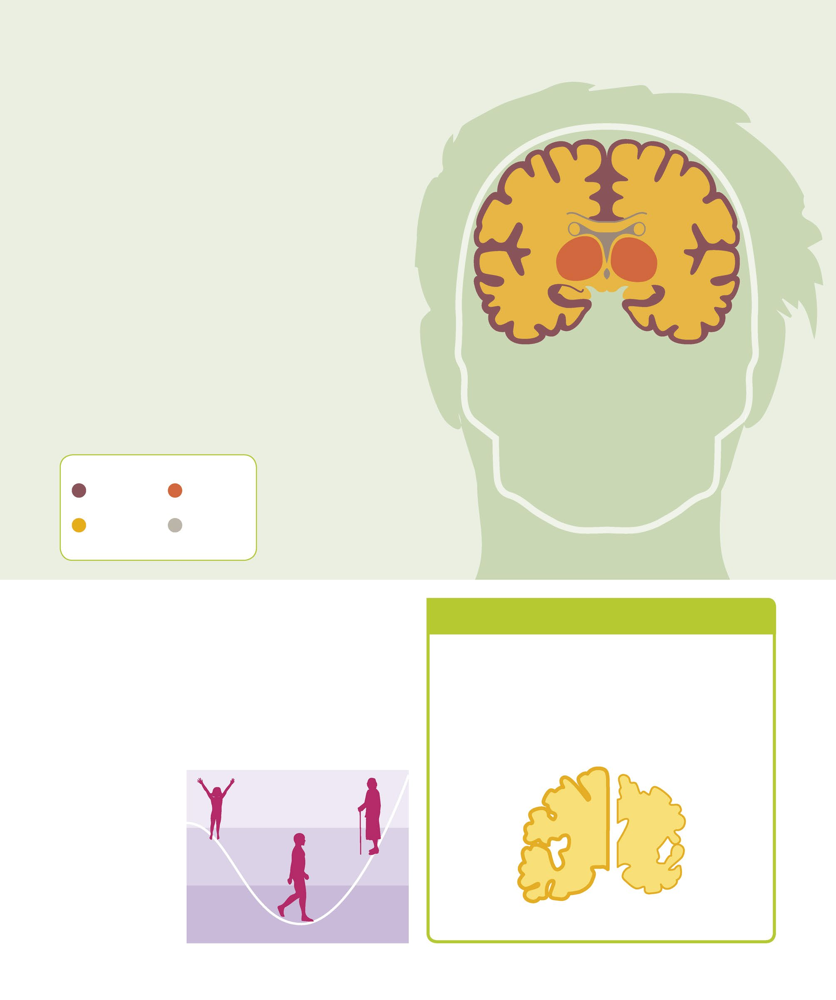
Các khoảng rỗng có kích thước bình thường
Khoang dưới nhện
Não bộ
Theo tuổi tác, một số khả năng suy giảm khi tế bào thần kinh thoái hóa và thể tích não giảm. Ở những tế bào thần kinh còn lại, các xung động có thể truyền đi chậm hơn.
Bộ não đang teo lại
Khi già đi, số tế bào thần kinh tự nhiên giảm dần do thoái hóa, và toàn bộ não teo lại 5 đến 10 phần trăm về thể tích. Điều này một phần là do lưu lượng máu đến não già giảm. Bao myelin mỡ bao bọc sợi trục của tế bào thần kinh cũng suy giảm theo tuổi tác, khiến các mạch não kém hiệu quả trong việc truyền thông tin, có thể dẫn đến vấn đề gợi nhớ trí nhớ và giữ thăng bằng.
Các bó chất trắng còn ở tình trạng tốt
Hạch nền khỏe mạnh, không có bất thường
Não trẻ
Não trẻ trông đầy đặn; các gờ phủ bề mặt vỏ não gần như chạm nhau. Các não thất chứa dịch ở trung tâm não thì nhỏ, và khoang dưới nhện, bao quanh và đệm cho não, tạo thành một lớp mỏng.
CHÚ THÍCH
Chất xám
Hạch nền
Chất trắng
Các não thất
Lão hóa và hạnh phúc
BỆNH ALZHEIMER
Lão hóa có vẻ là điều xấu, nhưng các nghiên cứu đã chỉ ra rằng khi chúng ta già đi, cảm giác hạnh phúc và khỏe mạnh tăng lên, trong khi mức độ căng thẳng và lo lắng giảm xuống. Não của người cao tuổi dường như tập trung vào điều tích cực tốt hơn. Họ có khả năng nhớ những hình ảnh vui vẻ hơn là buồn bã, và dành nhiều thời gian nhìn vào những khuôn mặt vui vẻ hơn là những khuôn mặt tức giận hoặc buồn bực.
Bệnh Alzheimer, dạng phổ biến nhất của sa sút trí tuệ (xem tr.200), được liên kết với sự tích tụ các protein trong não, vón cục thành các mảng và đống rối. Cuối cùng, các tế bào não bị ảnh hưởng chết đi, gây mất trí nhớ và các triệu chứng khác. Các nhà khoa học vẫn chưa biết liệu chính các protein gây ra bệnh hay chỉ là triệu chứng của bệnh, và các loại thuốc phá vỡ chúng vẫn chưa giúp ích được cho bệnh nhân.
Các não thất phình to
Lên xuống Một nghiên cứu phát hiện người trẻ và người già báo cáo mức độ khỏe mạnh cao hơn những người ở tuổi trung niên. Mức độ hạnh phúc tăng ổn định từ 50 tuổi trở đi.
Teo vỏ não nghiêm trọng
SỨC KHỎE TINH THẦN
NÃO KHỎE MẠNH
NÃO MẮC ALZHEIMER
TUỔI
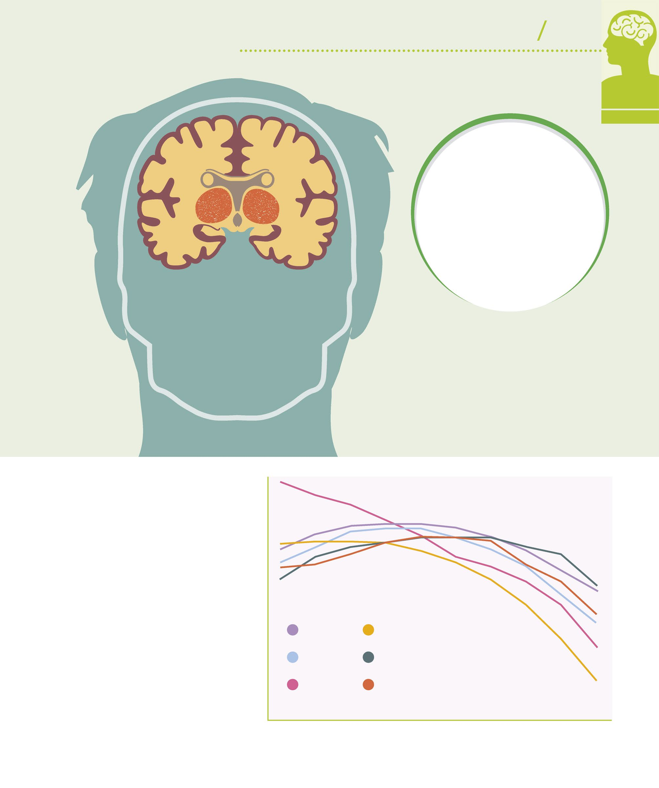
Khoang dưới nhện mở rộng, phản ánh sự mất thể tích não
Sự mất chất xám và chất trắng làm não thất to thêm
CHÚNG TA CÓ THỂ ĐIỀU TRỊ ALZHEIMER KHÔNG?
Thuốc có thể làm chậm tiến triển của bệnh và kiểm soát một số triệu chứng, nhưng vẫn chưa tìm ra cách chữa khỏi Alzheimer.
Sự suy thoái chất trắng dẫn đến truyền tín hiệu kém hiệu quả
Sắt tích tụ ở hạch nền, có thể gây bất thường
Não già
Khi già đi, tế bào não chết và các khoảng bên trong cùng xung quanh não mở rộng. Vỏ não mỏng đi, và các vùng như hải mã teo lại, thường gây ra vấn đề trí nhớ. Cả chất xám (thân tế bào thần kinh) và chất trắng (các sợi trục xếp chặt) đều bị mất.
NÃO CỦA NHỮNG NGƯỜI GIÀ ĐẶC BIỆT VẪN TRÔNG TRẺ SUỐT CUỘC ĐỜI
Suy giảm chậm?
- 60
Phản ứng nhanh với kích thích là kỹ năng đầu tiên suy giảm
Vốn từ vựng tiếp tục tăng đến tuổi già
Khi già đi, sự chú ý của chúng ta suy giảm và não trở nên kém dẻo hơn. Điều này khiến việc học khó hơn, dù không phải là không thể. Thực tế, học hỏi điều mới suốt cuộc đời tăng cường sức khỏe não và có thể ngăn ngừa suy giảm nhận thức bằng cách củng cố các khớp thần kinh. Và tuổi tác cũng mang lại một số lợi ích: trung bình, người cao tuổi giỏi hơn trong việc nắm bắt bức tranh toàn cảnh từ một tình huống và dùng kinh nghiệm sống để giải quyết vấn đề.
- 55
50 Điểm kiểm tra trung bình
- 45
Ở tuổi trung niên, các kỹ năng như định hướng không gian ngừng cải thiện
CHÚ THÍCH
- 40
Lập luận quy nạp
Năng lực số học
Định hướng không gian
Năng lực ngôn ngữ
- 35
Năng lực số học đòi hỏi trí nhớ làm việc, vốn thường suy giảm theo tuổi tác
Tốc độ tri giác
Trí nhớ ngôn ngữ
Kỹ năng và năng lực Nghiên cứu Dọc Seattle đã theo dõi người lớn trong 50 năm. Nghiên cứu phát hiện các kỹ năng như vốn từ vựng và kiến thức chung tiếp tục cải thiện trong hầu hết cuộc đời chúng ta.
- 30
- 25
- 32
- 39
- 46
53 Tuổi
- 60
- 67
- 74
- 81
- 88

Ngăn ngừa suy giảm
Khi già đi, hầu hết chúng ta nhận thấy sự giảm nhẹ về tốc độ tư duy cũng như sự suy giảm trí nhớ làm việc (xem tr.135). Một số người trải qua suy giảm nghiêm trọng hoặc thậm chí sa sút trí tuệ (xem tr.200), nhưng điều này không phải là không tránh khỏi. Thực tế, một số năng lực nhận thức, chẳng hạn như hiểu biết tổng thể của chúng ta về cuộc sống, thậm chí còn cải thiện khi chúng ta già đi. Chúng ta thừa hưởng mức độ cơ bản của trí nhớ và tốc độ tư duy từ cha mẹ, nhưng bản thiết kế di truyền này cũng bị ảnh hưởng bởi môi trường và trải nghiệm sống, bao gồm dinh dưỡng, sức khỏe, giáo dục, mức độ căng thẳng và các mối quan hệ. Các hoạt động kích thích về thể chất, xã hội và trí tuệ cũng đóng vai trò then chốt. Chúng ta có thể thực hiện nhiều bước để bảo vệ sức khỏe não bộ. Một chế độ ăn nhiều rau, trái cây, chất béo “tốt” và dưỡng chất (xem tr.54–55) giữ cho cả não và cơ thể khỏe mạnh, cũng như vận động cơ thể vừa phải nhưng đều đặn. Chạy bộ hoặc các bài tập hiếu khí khác có thể giúp trì hoãn sự suy giảm chức năng nhận thức liên quan đến tuổi tác. Bạn cũng có thể bảo vệ sức khỏe não bằng cách tránh các độc tố như rượu và thuốc lá. Hút thuốc đã được liên kết với tổn thương vỏ não. Nếu bạn uống rượu, hãy giữ trong giới hạn uống lành mạnh và có ít nhất hai ngày không uống rượu mỗi tuần.
Giữ cho trí óc được kích thích. Bất kỳ thử thách tinh thần nào liên quan đến học hỏi—từ sửa chữa nhà cửa đến nấu ăn đến giải ô chữ—đều có thể mở rộng các kỹ năng nhận thức. Hãy cân nhắc học một ngôn ngữ mới, vì những người nói hai hoặc nhiều ngôn ngữ có năng lực nhận thức mạnh hơn những người chỉ nói một. Tóm lại, bạn có thể làm chậm quá trình lão hóa nhận thức bằng cách: • Cung cấp đầy đủ oxy và dưỡng chất cho não. • Tránh tiếp xúc với độc tố như rượu và nicotine. • Vận động cơ thể bằng cách đưa hoạt động vào đời sống hàng ngày. • Rèn luyện trí óc bằng cách học các kỹ năng mới.
Làm chậm tác động của lão hóa
Khi già đi, tư duy và trí nhớ ngắn hạn của chúng ta có thể kém hiệu quả hơn. Tuy nhiên, chúng ta tiếp tục học cho đến khi qua đời, và có thể chủ động giữ cho não hoạt động tốt ở bất kỳ độ tuổi nào.

Cũng như mọi cơ quan khác, não người cần được cung cấp liên tục nước và dưỡng chất để duy trì sức khỏe và cung cấp năng lượng cho hoạt động hiệu quả.
Các vitamin B1, B2, B6; các axit béo omega-3; CÁ MÒI, CÁ HỒI
DẦU CÁ
Nuôi dưỡng bộ não
Một chế độ ăn lành mạnh có lợi cho cả trí óc lẫn cơ thể. Cacbohydrat phức tạp cung cấp dòng nhiên liệu ổn định; chúng có trong bánh mì ngũ cốc nguyên hạt, gạo lứt, các loại đậu, khoai tây và khoai lang. Chất béo lành mạnh cần thiết để duy trì tế bào não, và những chất béo này đến từ cá béo, dầu thực vật và các thực phẩm thực vật như quả bơ và hạt lanh. Protein cung cấp axit amin. Trái cây và rau cung cấp nước, vitamin và chất xơ.
BẮP CẢI
SUPP LƠ VÀ BÔNG CẢI XANH
CÁ CƠM
CÁ THU
BẮP CẢI BRUSSELS
QUẢ VIỆT QUẤT
QUẢ MÂM XÔI
KHOAI LANG
CUNG CẤP NƯỚC
QUẢ VIỆT QUẤT
DẦU Ô LIU
QUẢ MẶC NƯỚC
Tế bào não cần được cung cấp nước đầy đủ để hoạt động hiệu quả. Các nghiên cứu đã chỉ ra rằng mất nước có thể làm suy giảm khả năng tập trung và thực hiện các nhiệm vụ tinh thần, đồng thời ảnh hưởng tiêu cực đến trí nhớ. Một phần nước chúng ta nạp vào đến từ thực phẩm tiêu thụ, nhưng uống vài ly nước mỗi ngày sẽ giúp duy trì mức cung cấp nước lành mạnh.
DÂU TÂY
QUẢ KỶ TỬ
QUINOA (HẠT DIÊM MẠCH)
Chất chống oxy hóa, chất xơ, glucose
QUẢ NAM VIỆT QUẤT
S E M G U
CÁC LOẠI QUẢ MỌNG
L E
NGŨ CỐC NGUYÊN HẠT
CÁC LOẠI ĐẬU
Nguồn dưỡng chất Trái cây và rau tươi, đậu và đậu lăng, ngũ cốc nguyên hạt, chất béo lành mạnh như dầu ô liu, và cá béo như cá hồi đều cung cấp dưỡng chất thiết yếu cho não.
NGŨ CỐC NGUYÊN HẠT VÀ TINH BỘT
CACBOHYDRAT
Cacbohydrat phức tạp
Chất xơ, vitamin, vitamin B

NÃO GỒM 60 PHẦN TRĂM CHẤT BÉO VÀ CẦN ĐƯỢC CUNG CẤP NĂNG LƯỢNG ỔN ĐỊNH
Dưỡng chất thiết yếu
Một số dưỡng chất từ thực phẩm đã được phát hiện cải thiện hoặc duy trì các chức năng cụ thể của não. Những chất này gồm vitamin và khoáng chất, axit béo omega-3 và omega-6, chất chống oxy hóa và nước. Những dưỡng chất thiết yếu này giúp giữ cho tế bào não khỏe mạnh, cho phép tế bào truyền tín hiệu nhanh và hiệu quả, giảm tổn thương do viêm và các gốc tự do (nguyên tử có thể làm hỏng tế bào, protein và DNA), và giúp tế bào tạo kết nối mới. Chúng cũng có thể thúc đẩy sản xuất và chức năng của các chất dẫn truyền thần kinh. Kết quả là, thường xuyên ăn thực phẩm chứa các dưỡng chất này có lợi cho trí nhớ, chức năng nhận thức, sự tập trung và tâm trạng.
Rau họ cải và rau xanh đậm lá
Chất chống oxy hóa, chất xơ, dưỡng chất
DƯỠNG CHẤT
LỢI ÍCH
NGUỒN
CẢI XANH KALE
Axit béo omega-3 và omega-6
Giúp duy trì lưu lượng máu và màng tế bào trong não; hỗ trợ trí nhớ và giảm nguy cơ trầm cảm, rối loạn tâm trạng, đột quỵ và sa sút trí tuệ. Cá béo (như cá hồi, cá mòi, cá trích, cá thu) Dầu hạt lanh, dầu hạt cải Óc chó, hạt thông, hạt Brazil.
RAU BÓNG XANH
Vitamin nhóm B
Vitamin B6, B12 và axit folic hỗ trợ chức năng hệ thần kinh; choline giúp sản xuất chất dẫn truyền thần kinh. Trứng Ngũ cốc nguyên hạt như yến mạch, gạo lứt, bánh mì ngũ cốc nguyên hạt Rau họ cải (bắp cải, bông cải xanh, súp lơ, cải xanh kale) Đậu thận, đậu nành.
CẢI DÉN
Axit amin
Hỗ trợ sản xuất chất dẫn truyền thần kinh và hỗ trợ trí nhớ cùng sự tập trung
Thịt hữu cơ Gia cầm thả rông Cá Trứng Sản phẩm từ sữa Các loại hạt
Ô LIU
Chất béo không bão hòa đơn
Giữ cho mạch máu khỏe mạnh và hỗ trợ các chức năng như trí nhớ
Dầu ô liu Đậu phộng, hạnh nhân, đào hạt, phỉ, pecan, pistachio Quả bơ
Chất béo không bão hòa đơn, omega-6
DẦU THỰC VẬT
DẦU Ô LIU VÀ DẦU THỰC VẬT
Chất chống oxy hóa
Bảo vệ tế bào não khỏi tổn thương viêm do có các gốc tự do; cải thiện chức năng nhận thức và trí nhớ ở người cao tuổi
Sô cô la đen (ít nhất 70 phần trăm ca cao) Các loại quả mọng Lựu và nước lựu Cà phê xay Trà (đặc biệt là trà xanh) Rau họ cải Rau xanh đậm lá Đậu nành và các sản phẩm từ đậu nành Các loại hạt Bơ hạt và bơ các loại hạt, như bơ đậu phộng và tahini
Axit béo omega-3 và omega-6 / dầu hạt lanh
Nước
Giữ cho não được cung cấp nước để các phản ứng hóa học diễn ra hiệu quả
Nước máy (đặc biệt là nước “cứng”) Trái cây và rau

NHÂN TẾ BÀO
Nhiễm sắc thể giới tính không giống nhau (X và Y) cho thấy giới tính nam
Nhiễm sắc thể Chúng ta có khoảng 20.000 gen, được nhóm thành các nhiễm sắc thể. Mỗi nhân tế bào có 22 cặp nhiễm sắc thể tương đồng (gọi là nhiễm sắc thể thường), cộng thêm một cặp nhiễm sắc thể giới tính (XX giống nhau ở nữ, hoặc cặp không giống nhau XY ở nam).
GEN CÓ LUÔN HOẠT ĐỘNG KHÔNG?
Mỗi tế bào mang DNA đều có một bộ gen đầy đủ, nhưng nhiều gen thường chỉ hoạt động ở một bộ phận của cơ thể, chẳng hạn não, hoặc ở một giai đoạn của cuộc sống, chẳng hạn thời thơ ấu.
Hầu hết nhiễm sắc thể tồn thành cặp tương đồng
DNA và gen Phân tử DNA là một chuỗi dài, xoắn được tạo thành từ các cặp hóa chất gọi là bazơ—những “chữ cái” của mã di truyền—với bộ khung đường-phốt phát ở mỗi cạnh. Khi tế bào phân chia, một nửa DNA đi vào mỗi tế bào mới. Ngoài ra, chúng ta thừa kế một nhiễm sắc thể trong mỗi cặp từ mẹ và một từ cha, nên mỗi bậc cha mẹ đóng góp một nửa số gen của chúng ta.
Gen là gì?
Gen là các đoạn của một phân tử dài gọi là axit deoxyribonucleic (DNA), chứa mã điều khiển cách cơ thể chúng ta phát triển và hoạt động. Chúng ta thừa hưởng sự pha trộn các gen từ cha mẹ. Những gen này tạo ra protein định hình các đặc điểm cơ thể, chẳng hạn màu mắt, hoặc điều hòa các quá trình như phản ứng hóa học. Tác động của chúng bật hoặc tắt các đặc điểm này, hoặc làm chúng trở nên mạnh hơn hay yếu hơn.
Các bazơ ở một sợi được ghép đôi với một bazơ bổ sung ở sợi kia
Xoắn ốc DNA tự nó lại được cuộn chặt
Di truyền học và não bộ
Cạnh ngoài của mỗi sợi được tạo thành từ các phân tử đường và phốt phát
Gen chi phối cách cơ thể chúng ta, kể cả não, phát triển và hoạt động. Chúng phối hợp với môi trường để định hình chúng ta suốt cuộc đời, từ lúc thụ thai đến tuổi già.
Adenine (đỏ) luôn liên kết với thymine (vàng)
Bốn bazơ—adenine, thymine, guanine và cytosine—được sắp xếp theo một trình tự đặc biệt mã hóa thông tin di truyền của chúng ta

Gen lỗi ảnh hưởng đến não như thế nào
ĐỘT BIẾN
Gen không trực tiếp kiểm soát hành vi; thay vào đó, chúng chi phối số lượng và đặc điểm của các tế bào thần kinh, những tế bào mà hoạt động kết hợp lại tạo nên chức năng tinh thần của chúng ta. Ví dụ, một số gen ảnh hưởng đến mức độ chất dẫn truyền thần kinh (xem tr.24), từ đó điều hòa các chức năng như trí nhớ, tâm trạng, hành vi và kỹ năng nhận thức. Một gen lỗi có thể không tạo ra được protein cần thiết cho hoạt động khỏe mạnh của não, hoặc làm tăng nguy cơ rối loạn như bệnh Alzheimer. Một số lỗi có thể được thừa kế từ cha mẹ; hai kiểu di truyền được trình bày ở đây.
Khi tế bào phân chia, DNA hai sợi tách thành các sợi đơn, và mỗi bazơ được ghép với một bazơ bổ sung mới để tạo hai bản sao DNA. Tuy nhiên, đôi khi việc sao chép tạo ra thay đổi trong trình tự. Những thay đổi này có thể khiến gen tạo ra một protein bị biến đổi hoặc ngừng hoạt động hoàn toàn. Đột biến có thể phát sinh trong suốt cuộc đời hoặc được thừa kế từ cha mẹ.
Bộ khung của phân tử DNA
Đột biến xảy ra khi các cặp bazơ bị thay đổi trong quá trình sao chép
Cặp bazơ
CHA MẸ MẮC BỆNH CHA MẸ KHÔNG MẮC BỆNH
Trội trên nhiễm sắc thể thường Ở rối loạn trội trên nhiễm sắc thể thường, chẳng hạn bệnh Huntington, chỉ cần một người cha mẹ truyền gen lỗi lại là bệnh phát sinh.
Sợi DNA mới được tạo ra trong quá trình sao chép tế bào
LỖI
Chỉ có gen bình thường
Có gen lỗi
ÍT NHẤT MỘT PHẦN BA TỔNG SỐ GEN CỦA CHÚNG TA HOẠT ĐỘNG CHỦ YẾU Ở NÃO
CON MẮC BỆNH
CON KHÔNG MẮC BỆNH
Lặn trên nhiễm sắc thể thường Ở rối loạn lặn trên nhiễm sắc thể thường, chẳng hạn bệnh Tay-Sachs, rối loạn chỉ xảy ra khi cả hai người cha mẹ đều truyền một bản sao lỗi của gen. Người mang gen không mắc bệnh nhưng vẫn có thể truyền gen lỗi.
CHA MẸ MANG GEN
CHA MẸ MANG GEN
Guanine (xanh dương) luôn liên kết với cytosine (xanh lá)
Người cha mẹ có một gen lỗi và một gen khỏe mạnh
Đứa trẻ mắc bệnh có hai bản sao gen lỗi
Đứa trẻ không mắc bệnh
Những đứa trẻ mang gen có một gen lỗi và một gen khỏe mạnh

NÃO BỘ NAM GIỚI
KHI NÀO GIỚI TÍNH CỦA THAI NHI ĐƯỢC XÁC ĐỊNH?
Đồi thị (thalamus)
Vùng này, “trạm chuyển tiếp” giữa vỏ não (cortex) và các cấu trúc não sâu hơn, lớn hơn ở nam giới so với nữ giới. Hai bên của đồi thị có xu hướng được kết nối với nhau nhiều hơn ở nữ giới, nhưng ý nghĩa của đặc điểm này hiện vẫn chưa được biết rõ.
Giới tính nhiễm sắc thể được xác định tại thời điểm thụ tinh. Sự phân hóa giới tính về thể chất xảy ra sau thụ tinh từ 7 đến 12 tuần.
NÃO BỘ NỮ GIỚI — Thể chai (corpus callosum): Thể chai, nối hai bán cầu trái và phải của não, được phát hiện là lớn hơn ở nữ giới. Cấu trúc này có liên quan đến kỹ năng nhận thức cao hơn ở nữ giới, có thể vì các chức năng não được chia sẻ giữa hai bán cầu, trong khi ở nam giới thì không.
Sự khác biệt về thể chất
Sự khác biệt giữa nam và nữ bắt đầu với các nhiễm sắc thể giới tính ngay tại thời điểm thụ thai: XX ở nữ giới và XY ở nam giới. Trong tử cung, việc người mẹ giải phóng testosterone trong thời kỳ mang thai sẽ “nam hóa” thai nhi nam, khởi phát sự phát triển của các khác biệt cấu trúc giới tính cả ở não bộ lẫn cơ thể. Khi chúng ta lớn lên và phát triển, những khác biệt này sẽ xuất hiện ở nhiều cấu trúc não khác nhau (xem bên phải). Sự khác biệt về nhận thức và kỹ năng giữa hai giới đã hiện diện ngay từ thời thơ ấu. Não bộ của nam giới trưởng thành trung bình lớn hơn 8 đến 13 phần trăm so với não bộ của nữ giới trưởng thành. Ngoài ra, não bộ nam giới trưởng thành cũng có xu hướng biến đổi nhiều hơn về thể tích và độ dày vỏ não so với não bộ nữ giới.
NÃO BỘ THEO VÙNG — Hải mã (hippocampus): Nam giới có hải mã trước (phía trước) lớn hơn, vùng này kiểm soát việc tiếp nhận và mã hóa thông tin không gian-thị giác mới, trong khi nữ giới có hải mã sau lớn hơn, kiểm soát việc truy xuất kiến thức không gian-thị giác đã có.
Não bộ nam và nữ
MỌI PHÔI THAI NGƯỜI ĐỀU BẮT ĐẦU CUỘC SỐNG VỚI NÃO BỘ NỮ — CẦN THÊM HORMONE ĐỂ TẠO NÊN NAM GIỚI
Các nhà khoa học đã phát hiện rằng não bộ nam và nữ có những khác biệt rõ rệt về thể chất. Tuy nhiên, không phải lúc nào cũng rõ những biến đổi này ảnh hưởng thế nào đến thái độ, hoạt động và phản ứng của chúng ta đối với môi trường. Sự khác biệt có thể phát sinh từ cách não bộ được sử dụng trong cuộc sống, cũng như từ hình thái thể chất của nó.

NÃO BỘ THEO VÙNG — Vùng dưới đồi (hypothalamus): Một số vùng ở vùng dưới đồi kiểm soát hành vi tình dục điển hình ở nam và phản ứng với căng thẳng lớn hơn ở nam giới dị tính so với nữ giới hoặc nam giới đồng tính.
Sự khác biệt về chức năng
Não bộ nam và nữ khác nhau cả về chức năng lẫn cấu trúc. Não bộ nam có vẻ “thiên về một bên” (lateralized) hơn, tức là có sự khác biệt lớn hơn về chức năng giữa bán cầu trái và phải. Nam giới cũng biến đổi nhiều hơn nữ giới về năng lực nhận thức. Những biến đổi này một phần là do cấu trúc của “mạng kết nối” (connectome) — mạng lưới các kết nối thần kinh giữa các vùng của não bộ (xem bên dưới). Chúng cũng bắt nguồn từ tác động của hormone và các ảnh hưởng bên ngoài trong suốt cuộc đời chúng ta. Đặc biệt, môi trường xã hội và kinh nghiệm sống liên tục định hình các đường dẫn thần kinh của chúng ta, giúp chúng ta thực hiện các nhiệm vụ điển hình của nam hoặc nữ.
NÃO BỘ THEO VÙNG — Hạch hạnh nhân (amygdala): Hạch hạnh nhân, tham gia vào các phản ứng cảm xúc, ra quyết định và hình thành ký ức cảm xúc, lớn hơn một chút ở nam giới. Tuy nhiên, sự khác biệt về chức năng, chẳng hạn như phản ứng với kích thích cảm xúc tiêu cực so với tích cực, lại có ý nghĩa lớn hơn.
Ít kết nối băng qua giữa hai bán cầu
Kết nối nhiều hơn trong lòng mỗi bán cầu
Cấu trúc não: Có một số vùng mà tại đó đã xác định được những khác biệt thể chất đo lường được giữa não bộ nam và nữ trưởng thành. Các vùng chính được trình bày ở đây. Những khác biệt này ảnh hưởng thế nào đến nhận thức và tâm lý hiện vẫn đang là chủ đề của các nghiên cứu khoa học tiếp diễn.
NAM
Nhiều kết nối giữa hai bán cầu
Ít kết nối hơn trong lòng mỗi bán cầu
NÃO BỘ PHI NHỊ NGUYÊN
Người đồng tính và người chuyển giới được phát hiện có một số cấu trúc não đặc biệt. Ví dụ, một số vùng của vùng dưới đồi (xem ở trên) khác nhau ở nam giới đồng tính và dị tính, và hạt vỏ (putamen) — liên quan đến học tập và điều hòa vận động — có nhiều chất xám hơn ở phụ nữ chuyển giới so với nam giới không chuyển giới (cisgender).
NỮ
Mạng kết nối (connectome): Một nghiên cứu, trong đó hơn 900 bộ não được chụp ảnh, đã phát hiện rằng não bộ nam có mức kết nối lớn hơn trong lòng mỗi bán cầu, trong khi não bộ nữ có các kết nối dày đặc hơn giữa hai bán cầu. Nam giới được thấy làm tốt hơn trong xử lý không gian, còn nữ giới đạt điểm cao hơn về sự chú ý và trí nhớ với từ ngữ và khuôn mặt.
BIỂU TƯỢNG PHI NHỊ NGUYÊN
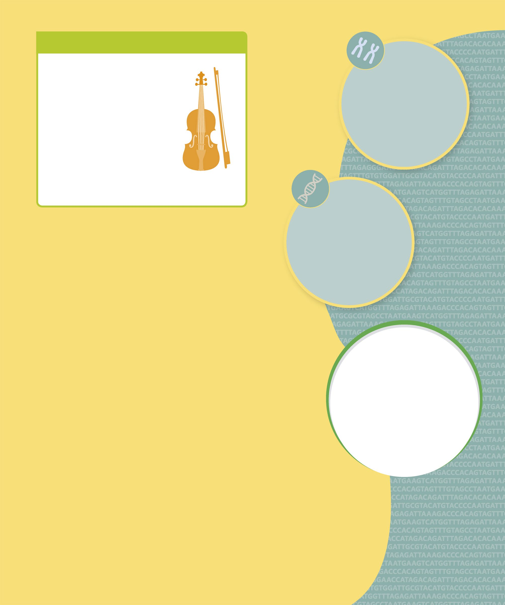
NÃO BỘ ÂM NHẠC
Chơi nhạc liên quan đến nhiều vùng của não bộ. Các nghiên cứu so sánh não bộ của nhạc sĩ chuyên nghiệp và người nghiệp dư cho thấy nhạc sĩ chuyên nghiệp có thể tích chất xám lớn hơn ở các vùng não liên quan đến vận động, thính giác và lập luận thị giác-không gian. Kết quả nghiên cứu cho thấy não bộ trải qua những thích nghi cấu trúc để đáp ứng với môi trường (việc dành hàng giờ luyện tập lặp đi lặp lại với một nhạc cụ).
Chúng ta thừa hưởng từ cha mẹ (xem tr.56–57). Chính các nhiễm sắc thể, tại thời điểm thụ tinh, quyết định giới tính nhiễm sắc thể của một phôi thai (XX ở nữ giới và XY ở nam giới). Những bất thường về nhiễm sắc thể cũng có thể gây bệnh hoặc các vấn đề phát triển.
các nhiễm sắc thể của mình, vốn chứa DNA, từ cha mẹ
Một số đặc điểm tâm lý, chẳng hạn như khuynh hướng phát triển trầm cảm, đã được liên kết với các gen cụ thể — nhưng thường thì có hàng chục, thậm chí hàng trăm gen cùng tác động với nhau. Người nào thừa hưởng càng nhiều trong số các gen đó thì càng có khả năng phát triển đặc điểm ấy.
HẢI MÃ TRONG NÃO BỘ NGƯỜI LỚN TẠO RA KHOẢNG 700 TẾ BÀO THẦN KINH MỖI NGÀY
Gen so với môi trường
Mỗi người sinh ra đã có một “bản mẫu” DNA thừa hưởng từ cha mẹ (xem tr.56–57): đây là yếu tố “bẩm sinh” ảnh hưởng đến hoạt động của não bộ, chẳng hạn như năng lực nhận thức và hành vi. Tuy nhiên, suốt cuộc đời mỗi người, các mạng lưới tế bào thần kinh (xem tr.26–27) có thể thích nghi và thay đổi để đáp ứng với các trải nghiệm thể chất và xã hội (“môi trường nuôi dưỡng”). Những ảnh hưởng của môi trường, nếu mạnh và kéo dài, có thể làm thay đổi cấu trúc não bộ và cũng ảnh hưởng đến cách các gen hoạt động — một quá trình được gọi là thay đổi biểu sinh (xem trang đối diện).
KHI NÀO
THAY ĐỔI BIỂU SINH XẢY RA?
Thay đổi biểu sinh có thể do các yếu tố môi trường gây ra ở bất kỳ thời điểm nào trong cuộc đời một người, từ sự phát triển trong tử cung đến tuổi già.
Bẩm sinh và nuôi dưỡng
Hai ảnh hưởng cơ bản lên não bộ, “bẩm sinh” và “nuôi dưỡng”, đôi khi được xem là những lực lượng đối lập. Tuy nhiên, giữa chúng có một sự tương tác năng động diễn ra suốt cuộc đời mỗi người.

NUÔI DƯỠNG
MÔI TRƯỜNG VẬT LÝ
Thay đổi biểu sinh
Những thay đổi trong cách các gen được sử dụng (hay biểu hiện) xảy ra trong suốt cuộc đời một người được gọi là thay đổi biểu sinh. Chúng ảnh hưởng đến chức năng của gen, chứ không phải cấu trúc gen, và có thể truyền lại cho con cái của một người, dù chúng có thể chỉ kéo dài vài thế hệ. Trong não bộ, chúng có thể ảnh hưởng đến các chức năng như học tập, trí nhớ, tìm kiếm phần thưởng và phản ứng với căng thẳng. Có hai dạng chính: methyl hóa, trong đó một hợp chất gắn vào DNA; và biến đổi histone, làm thay đổi mức độ quấn chặt của DNA.
Các nghiên cứu trên trẻ em đã phát hiện rằng việc lớn lên trong nghèo khó hoặc thiếu thốn có thể làm suy giảm sự phát triển của các vùng liên quan đến trí nhớ, xử lý ngôn ngữ, ra quyết định và tự kiểm soát. Tuy nhiên, một môi trường gia đình an toàn, hạnh phúc, với những việc thú vị để làm, dường như làm giảm tổn hại đó.
MỨC ĐỘ CĂNG THẲNG
Hợp chất methyl gắn vào một bazơ của DNA
Căng thẳng cảm xúc mãn tính ở trẻ em có thể làm suy giảm sự phát triển của hạch hạnh nhân, hải mã và các thùy trán, dẫn đến các vấn đề về trí nhớ, cảm xúc và học tập. Nó hạn chế hoạt động của các gen điều hòa sự phát triển của mạng lưới tế bào thần kinh. Tuy nhiên, căng thẳng “tích cực” vừa phải (vui vẻ) có thể hỗ trợ việc học tập.
Methyl hóa DNA: Trong quá trình này, một phân tử hợp chất methyl gắn vào một trong các bazơ trong trình tự DNA của một gen. Kết quả là làm ngừng hoặc hạn chế hoạt động của gen đó.
Các cặp bazơ ở hầu hết trình tự không thay đổi
CHẾ ĐỘ ĂN UỐNG
Một chế độ ăn uống lành mạnh (xem tr.54–55) giàu axit béo omega-3, vitamin B và chất chống oxy hóa giữ cho mạch máu khỏe mạnh, cải thiện lưu lượng máu lên não. Những dưỡng chất này cũng được liên kết với việc cải thiện trí nhớ và duy trì các chức năng nhận thức ở người cao tuổi.
NGHIÊN CỨU SINH ĐÔI
Các nghiên cứu về sinh đôi cho thấy một đặc điểm cụ thể, chẳng hạn như hệ số thông minh (IQ), phụ thuộc bao nhiêu vào di truyền và bao nhiêu vào môi trường. Hầu hết cặp sinh đôi lớn lên trong cùng một gia đình; tuy nhiên, sinh đôi cùng trứng chia sẻ 100 phần trăm gen của mình, trong khi sinh đôi khác trứng (sinh đôi bụng) chỉ chia sẻ 50 phần trăm. Nếu một đặc điểm thể hiện rõ hơn ở sinh đôi cùng trứng so với sinh đôi khác trứng, hoặc xuất hiện ở những cặp sinh đôi cùng trứng bị tách ra ngay từ lúc mới sinh, điều đó gợi ý rằng di truyền có ảnh hưởng mạnh hơn môi trường.
MẠNG LƯỚI XÃ HỘI
CHA MẸ SINH HỌC
CHA MẸ NUÔI
Người ta đã phát hiện rằng cô đơn làm thay đổi việc sản xuất chất dẫn truyền thần kinh, khiến con người cảm nhận được ít phần thưởng hơn từ các tiếp xúc xã hội và có nhiều khả năng hiểu sai thái độ của người khác là đe dọa. Tuy nhiên, việc duy trì các mối quan hệ xã hội chặt chẽ có thể hỗ trợ trí nhớ và kỹ năng nhận thức.
SINH ĐÔI KHÔNG ĐƯỢC NHẬN NUÔI
SINH ĐÔI ĐƯỢC NHẬN NUÔI
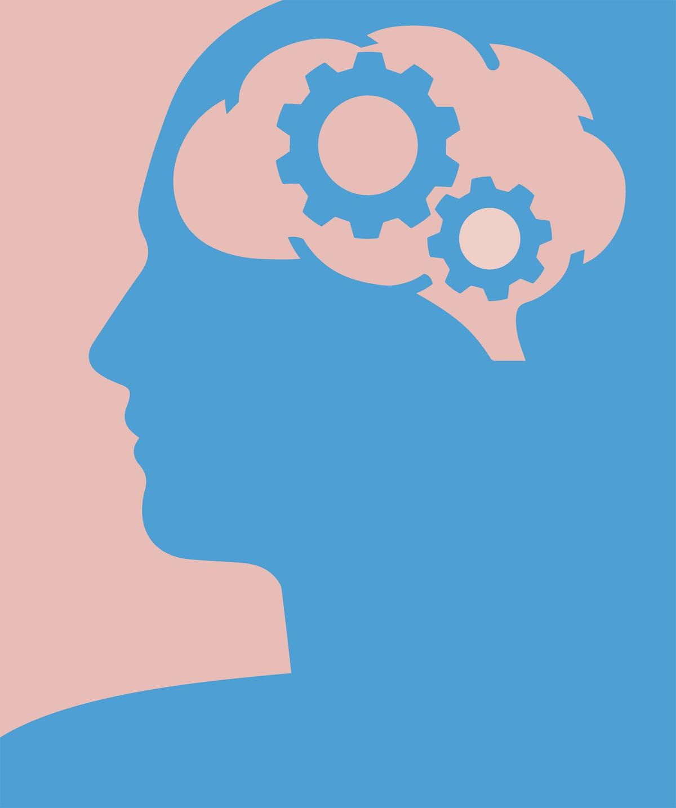